このまとめの目的: 本が手元になくても、 このページだけで Bishop『パターン認識と機械学習』第1章を 行間に詰まらず 理解できるようにすること。 必要な式・図・具体例は すべてこの中に入れてあります。 式番号は英語版・日本語版の PRML と完全一致するので、 本を持っている人は そのまま対応づけて読めます。
第1章の議論を読むときに「ここの記号は何だっけ」「この変形のルールはなんだっけ」で詰まらないよう、本まとめで使う記法と技法を一望できる小辞典です。詰まったら戻ってきてください。
| 記号 | 意味 | 例 / 注意 |
|---|---|---|
| $\sum_{n=1}^{N} a_n$ | $a_1 + a_2 + \cdots + a_N$ の総和 | 「離散版の積分」 |
| $\int f(x)\, dx$ | $f(x)$ を $x$ について積分（連続版の和） | 本書では基本的に $-\infty$ から $\infty$ |
| $\prod_{n=1}^{N} a_n$ | $a_1 a_2 \cdots a_N$ の総積 | i.i.d. 尤度で必ず登場 |
| $f(x) \propto g(x)$ | $f(x) = c \cdot g(x)$（$c$ は $x$ に依らない定数） | 「比例」。$c$ は正規化で後で決まる |
| $X \sim p$ | 確率変数 $X$ は分布 $p$ に従う | 例: $\varepsilon \sim \mathcal{N}(0, 1)$ |
| $E[X], \mathbb{E}[X]$ | 期待値 = 「平均」 離散: $\sum_x x\,p(x)$、連続: $\int x\,p(x)\,dx$ | $E[aX+b] = aE[X]+b$、線形 |
| $\mathrm{var}[X]$ | 分散 = $E[(X-E[X])^2] = E[X^2] - (E[X])^2$ | $\sigma^2$ と書くことも |
| $\mathrm{cov}[X,Y]$ | 共分散 = $E[XY] - E[X]E[Y]$ | 独立なら 0 |
| $\dfrac{\partial f}{\partial x_i}$ | 偏微分（他の変数を定数とみなして $x_i$ で微分） | $f = x^2 + xy$ なら $\partial f/\partial x = 2x + y$ |
| $\nabla f$ | 勾配 = $(\partial f/\partial x_1, \ldots, \partial f/\partial x_D)^\top$ | 「全方向の偏微分を縦に並べたベクトル」 |
| $\arg\min_x f(x)$ $\arg\max_x f(x)$ | $f(x)$ を最小／最大にする $x$ の値 | $\min f$ は最小値そのもの、 $\arg\min$ は最小値を達成する場所 |
| $|x|$ | 絶対値（スカラー） | $|-3| = 3$ |
| $\|\mathbf{x}\|$ | ノルム（ベクトルの長さ） = $\sqrt{x_1^2 + \cdots + x_D^2}$ | $\|\mathbf{x}\|^2 = \mathbf{x}^\top \mathbf{x}$ |
| $\mathbf{x}^\top$ または $\mathbf{x}^T$ | 転置 (行と列を入れ替え) | 列ベクトル $\mathbf{x}$ の転置は行ベクトル |
| $\mathbf{x}^\top \mathbf{y}$ | 内積 = $\sum_i x_i y_i$ | スカラーになる |
| $|A|$, $\det A$ | 行列の行列式 | 2×2 なら $|A| = a_{11}a_{22} - a_{12}a_{21}$ |
| $A^{-1}$ | 逆行列 ($A A^{-1} = I$) | $I$ は単位行列 |
| $\mathbf{w}$, $\boldsymbol\mu$, $\boldsymbol\Sigma$ | 太字 = ベクトル または 行列 | 細字 $w_i$ は成分 |
| $p(x)$, $p(x|y)$ | 確率密度 (連続) / 条件付き密度 PRMLは離散も同じ $p$ で書く | $p(x|y)$ は「$y$ が与えられた下での $x$ の分布」 |
| $\mathcal{N}(x \mid \mu, \sigma^2)$ | 平均 $\mu$ ・分散 $\sigma^2$ のガウス分布の密度 | $x$ は確率変数、 $|$ の右は分布のパラメータ |
| $\delta_{nm}$ | クロネッカーのデルタ ($n=m$ で 1、それ以外 0) | PRMLでは $I_{nm}$ とも書くが、単位行列 $\mathbf{I}$ と区別しよう |
| $\Gamma(z)$ | ガンマ関数 = $\int_0^\infty t^{z-1} e^{-t}\, dt$ | $\Gamma(n) = (n-1)!$ の連続拡張 |
$N$ 個の項の積 $\prod_n a_n$ は扱いにくいが、対数を取ると
$$\ln \prod_{n=1}^{N} a_n = \sum_{n=1}^{N} \ln a_n$$
になり、微分や解析が一気に楽になります。i.i.d. の尤度関数 $p(\mathcal{D}\mid \mathbf{w}) = \prod_n p(x_n|\mathbf{w})$ に必ず適用します。対数は単調増加なので、 $\arg\max$ の位置は不変です。
$y = f(g(x))$ なら $\dfrac{dy}{dx} = f'(g(x)) \cdot g'(x)$。
例: $E(\mathbf{w}) = \tfrac{1}{2} \sum_n (y_n(\mathbf{w}) - t_n)^2$ を $w_i$ で偏微分すると
$$\frac{\partial E}{\partial w_i} = \sum_n \underbrace{(y_n(\mathbf{w}) - t_n)}_{\text{外側の微分}} \cdot \underbrace{\frac{\partial y_n}{\partial w_i}}_{\text{内側の微分}}$$
2乗を外す時の「2」と $\tfrac{1}{2}$ が打ち消し合います。これが PRML §1.1 で $\tfrac{1}{2}$ を付けておく実用上の理由。
2次式は次のように一意に書き換えられます:
$$a x^2 + b x + c = a\left(x + \frac{b}{2a}\right)^2 + c - \frac{b^2}{4a}$$
PRMLでは指数の肩がよく2次形式 $-\tfrac{1}{2\sigma^2}(x - \mu)^2$ になっています。複数のガウスの積を取ると指数の肩は2次式の和 = 2次式、平方完成して再びガウスの形に戻ります。これが「ガウス×ガウス = ガウス」の正体（§5 で使用）。
滑らかな関数 $f$ が点 $x^*$ で最小・最大なら、勾配がゼロ:
$$\left.\frac{\partial f}{\partial x_i}\right|_{x=x^*} = 0, \quad \forall i$$
MLE、MAP、最小二乗、これら全てがこのレシピで解かれます。「微分してゼロ → その方程式を解く」が基本動作。
$$\int_{-\infty}^{\infty} e^{-a x^2}\, dx = \sqrt{\frac{\pi}{a}}$$
確率密度の正規化定数を求めるとき必ず登場（§4.1 で証明）。 $a = 1/2$ なら $\sqrt{2\pi}$、 $a = 1/(2\sigma^2)$ なら $\sqrt{2\pi\sigma^2}$。
$\int f(x)\, dx$ で $x = g(u)$ と置換すると $dx = g'(u)\, du$:
$$\int f(x)\, dx = \int f(g(u))\, g'(u)\, du$$
多次元の場合は $g'(u)$ がヤコビ行列式 $|\partial \mathbf{x}/\partial \mathbf{u}|$ に。極座標 $(x,y) \to (r, \theta)$ では $|\partial(x,y)/\partial(r,\theta)| = r$。 これがガウス積分の証明で「$r$ が出てくる」根拠。
$f$ が凸関数（弦が関数より上にある形、例: $x^2$、$-\ln x$）なら
$$E[f(X)] \ge f(E[X])$$
幾何的には「ランダムに点を取って関数値の平均を計算する方が、先に点の平均を取って関数に入れるより大きい (または同じ)」。 KL の非負性、変分推論の ELBO、すべてこの一行から導かれます (§9 で使用)。
普通の微分は「変数 $w$」に対して。 汎関数微分は「関数 $y(\cdot)$ そのもの」に対して微分する操作。 直感的には「$y$ を $y(x_0)$ の点だけ少し動かしたときの汎関数 $E[y]$ の変化率」。
$E[y] = \int F(y(x), x)\, dx$ の形（$y$ の微分や積分を含まない簡単な形）なら、 答えは各点で普通の偏微分を取るだけ:
$$\frac{\delta E[y]}{\delta y(x_0)} = \left.\frac{\partial F}{\partial y}\right|_{x = x_0}$$
これがゼロになる条件「全ての $x_0$ で $\partial F/\partial y = 0$」が、 汎関数を最小化する $y$ の必要条件 (Euler-Lagrange 方程式の最も簡単な形)。 §1.5.5 の $L_q$ 損失最小化と演習 1.27 で使用 (詳細は付録 D)。
第1章は ML本体に入る前の3つの言語を導入する章です。
┌──────────────────────────────────────────────────────┐
│ 言語1: 確率論 (§1.2) ─ すべての推論の文法 │ → 演習 1.12
│ 言語2: 決定理論 (§1.5) ─ 推論を行動に変換する │ → 演習 1.27
│ 言語3: 情報理論 (§1.6) ─ 分布の比較・圧縮の尺度 │ → 演習 1.31, 1.35
└──────────────────────────────────────────────────────┘
↓ 統一例として
[§1.1 多項式曲線フィッティング] → 演習 1.1
↓ 派生
§1.3 モデル選択 │ §1.4 次元の呪い → 演習 1.20
章末演習はこの3言語＋多項式回帰＋高次元の幾何を横断的に問います。 各演習は、 下の表の「関連節」の終わりに そのまま置いてあります（問題文＋完全解答つき）。 この表は「どの演習が どこにあるか」の索引としても使ってください:
| 演習 | 難度 | 関連節 | 確かめる内容 |
|---|---|---|---|
| 1.1 | ∗ | §1.1 | 多項式回帰の正規方程式 |
| 1.12 | ∗∗ | §1.2.4 | ガウス i.i.d. のモーメント → MLE分散のバイアス |
| 1.20 | ∗∗ | §1.4 | 高次元ガウスの半径方向密度 |
| 1.27 | ∗∗ | §1.5.5 | $L_q$ 損失と最適な $y(x)$ |
| 1.31 | ∗∗ | §1.6 | 同時エントロピー不等式 $H[x,y] \le H[x]+H[y]$ |
| 1.35 | ∗ | §1.6 | 1次元ガウスのエントロピー |
「N点のデータに M次多項式を当てる」だけの話。だが3つの問いが第1章を貫きます:
テスト勉強でたとえると しっくりきます。 M=9（高次の多項式）は、 過去問の答えを丸暗記した学生。 手元の10問（訓練データ）には完璧に答えられる（曲線が全点を通る）。 でも 少しひねった新問（テストデータ）が来ると、 グニャグニャの曲線が 見当違いの値を返して 大外しします。
いっぽう M=3 くらいは「出題のパターンを理解した学生」。 手元の問題で 多少とりこぼしても、 新しい問題にも そこそこ答えられる。 機械学習で本当に欲しいのは こちら、 つまりまだ見ぬデータへの当てはまり（これを「汎化」と呼びます）です。 「訓練データに合うこと」と「汎化すること」は 別物、 という感覚が この章のすべての出発点になります。
多項式モデルと二乗和誤差:
$$y(x, \mathbf{w}) = w_0 + w_1 x + w_2 x^2 + \cdots + w_M x^M = \sum_{j=0}^{M} w_j x^j$$ $$E(\mathbf{w}) = \tfrac{1}{2} \sum_{n=1}^{N} \{ y(x_n, \mathbf{w}) - t_n \}^2$$
「なぜ $\tfrac{1}{2}$ が付くか?」 → 微分時に 2 が消えて式が綺麗になるだけです。深い意味はありません。
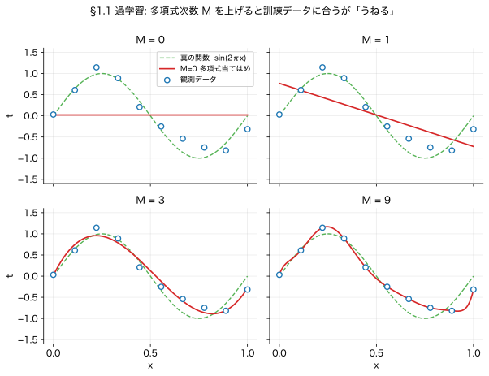
異なる N の比較や訓練 vs テストの比較には根平均二乗誤差 (RMS error) を使います:
$$E_{\mathrm{RMS}} = \sqrt{2 E(\mathbf{w}^*) / N} \qquad \text{(式 1.3)}$$
2 倍は (1.2) の $\tfrac{1}{2}$ を打ち消す、$N$ で割って単位を揃える、平方根で「$t$ と同じ単位」に。
これを図にしたのが 下の図2 です。 横軸が 多項式の次数 $M$、 縦軸が $E_{\mathrm{RMS}}$。 訓練誤差（青）は $M$ を上げるほど 単調に下がる（手元のデータには どんどん よく当たる）のに、 テスト誤差（赤）は ある $M$ で底を打ち、 その先では 逆に跳ね上がる。 この「U字」の底が ちょうどよい $M$ で、 右肩上がりの部分が過学習です。
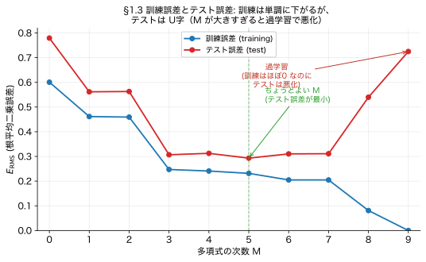
M=9, N=10 で完全フィットになる代わりに $w_i$ が暴走します。 PRML 表 1.1 によれば:
| $M$ | 0 | 1 | 6 | 9 |
|---|---|---|---|---|
| $w_9^*$ の大きさ | — | — | — | $\approx 125{,}201$ |
これを抑えるのが正則化:
$$\widetilde{E}(\mathbf{w}) = E(\mathbf{w}) + \tfrac{\lambda}{2} \|\mathbf{w}\|^2 \qquad \text{(式 1.4)}$$
$\lambda$ を大きくすると「 $\mathbf{w}$ を 0 に近づける罰金」が強まる。表 1.2 によると $M=9$ で $\ln\lambda = -18$ にすると $w_9^*$ は $72.68$ まで縮む（約1700倍の差！）。後の §1.2.5 で $\lambda$ は事前分布と雑音の精度の比 $\alpha/\beta$ と解釈されます（MAP推定、 §5.2 参照）。
経験則: 「データ点数 $\geq$ パラメータ数の 5〜10 倍」（PRML p.9）。 ただし §3 では正則化により「実効パラメータ数」が下がるので、この経験則は緩みます。 また実用では切片 $w_0$ を正則化項から除く流派が多い（$t$ の原点シフトに対する不変性を保つため; PRML p.10 脚注）。
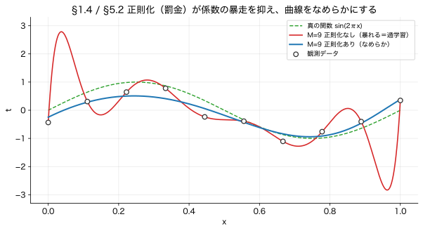
$\partial E / \partial w_i = 0$ を解く問題。 方針は連鎖律 ([テクニック2]) で外側の2乗を外し、 $\partial y/\partial w_i = x_n^i$ を代入、 $w_j$ について整理すると正規方程式に到達します:
$$\sum_{j=0}^{M} A_{ij}\, w_j = T_i \qquad A_{ij} = \sum_n x_n^{i+j},\; T_i = \sum_n t_n x_n^i \qquad \text{(式 1.122)}$$
行列形式 $\mathbf{w} = (\Phi^\top \Phi)^{-1} \Phi^\top \mathbf{t}$ ($\Phi$ は計画行列 (design matrix), $\Phi_{nj} = x_n^j$, $N \times (M{+}1)$)。 後の式 (3.15) と同型 (§3 では基底 $\phi_j(x)$ を一般化、 本節は $\phi_j(x) = x^j$ の特化版)。
中間ステップを省かない完全な3段階導出は、 このすぐ下の「演習 1.1」カードにあります。
▼ この節の内容を使う章末演習です。 まず自分で手を動かしてから、 解答を開いてください。
方針: 二乗和誤差 $E(\mathbf{w})$ を $w_i$ で偏微分してゼロと置き、 各 $w_j$ について線形な連立方程式に整理する。
この問題は 添字が 3種類出てきて 混乱しがちです。 まず それぞれが「何の番号か」を はっきりさせましょう:
イメージ: $n$ は「横」（データ点をまたぐ方向）、 $i, j$ は「縦」（係数をまたぐ方向）の番号、 と思うと混ざりません。 $\sum_n$ と $\sum_j$ はまったく別のものを足しています。 そして $i$ と $j$ が2つあるのは役割が違うから ——$j$＝多項式を作る"走る"番号、 $i$＝いま微分している"固定の相手"。 Step 2 で「$j = i$ の項だけ 生き残る」のが この2つの出会う瞬間です。
Step 1. 連鎖律で外側の2乗を外す。
$E(\mathbf{w}) = \tfrac{1}{2}\sum_n \{y(x_n,\mathbf{w}) - t_n\}^2$ で、$u_n := y(x_n,\mathbf{w}) - t_n$ とおくと外側微分は $2u_n$:
$$\frac{\partial E}{\partial w_i} = \tfrac{1}{2} \sum_n 2 (y(x_n,\mathbf{w}) - t_n) \cdot \frac{\partial y(x_n,\mathbf{w})}{\partial w_i} = \sum_n (y(x_n,\mathbf{w}) - t_n)\cdot\frac{\partial y}{\partial w_i}$$
$\tfrac{1}{2}$ と $2$ が打ち消す（これが §1.1 の式 (1.2) で $\tfrac{1}{2}$ を付けた実用的理由）。
Step 2. $\partial y / \partial w_i$ を計算。
$y(x_n, \mathbf{w}) = \sum_j w_j x_n^j$ を $w_i$ で偏微分すると、 $j = i$ の項だけ残り係数は $x_n^i$:
$$\frac{\partial y(x_n,\mathbf{w})}{\partial w_i} = x_n^i$$
Step 3. ゼロと置き $w_j$ について整理。
$$\sum_n \left( \sum_j w_j x_n^j - t_n \right) x_n^i = 0$$
和の順序を入れ替えて:
$$\sum_j \underbrace{\left(\sum_n x_n^{i+j}\right)}_{A_{ij}} w_j = \underbrace{\sum_n t_n x_n^i}_{T_i}$$
結論.
$$\boxed{\sum_{j=0}^{M} A_{ij}\, w_j = T_i \qquad (1.122)}$$
これは $\mathbf{w}$ について $M+1$ 個の線形方程式で、行列形式では $\mathbf{w} = (\Phi^\top \Phi)^{-1} \Phi^\top \mathbf{t}$。 計画行列 $\Phi$ ($\Phi_{nj} = x_n^j$) を用いた擬逆行列の形で、後の式 (3.15) と同型 (§3 では基底 $\phi_j(x)$ を一般化)。
添字が抽象的なので、 いちばん簡単な $M=1$（直線当てはめ）で 中身を 全部 具体化します。 係数は $w_0, w_1$ の2つだけ（$i, j \in \{0, 1\}$）。
$A_{ij} = \sum_n x_n^{\,i+j}$（入力のべきの合計）の 4成分:
$T_i = \sum_n x_n^{\,i}\, t_n$ は: $\ T_0 = \sum_n t_n$（正解の合計）、 $\ T_1 = \sum_n x_n t_n$。
連立方程式 $\sum_j A_{ij} w_j = T_i$ を $i = 0, 1$ で 書き下すと、 ただの $2\times 2$ の連立一次方程式:
$$\begin{aligned} i = 0:\quad & N\, w_0 \;+\; \big(\textstyle\sum_n x_n\big)\, w_1 \;=\; \textstyle\sum_n t_n \\ i = 1:\quad & \big(\textstyle\sum_n x_n\big)\, w_0 \;+\; \big(\textstyle\sum_n x_n^2\big)\, w_1 \;=\; \textstyle\sum_n x_n t_n \end{aligned}$$
これは 高校〜大学で習う「最小二乗法による直線フィット」の公式そのものです。 つまり 一般の (1.122) は、 この見慣れた 2本の式を 任意の次数 $M$（$M+1$ 本）に拡張しただけ。 添字の正体も見えてきます: $A_{ij}$ は「入力のべきの合計を 縦横に並べた $(M{+}1)\times(M{+}1)$ の表（行列）」、 $T_i$ は「正解 $t_n$ に 入力のべき $x_n^i$ を掛けて足した 縦ベクトル」。 $i$ が行番号、 $j$ が列番号です。
「学校の公式」と本当に一致するか、 解いて確認: 上の2本（$2\times2$ 連立）を $w_0, w_1$ について解くと、
$$w_1 = \frac{N\sum_n x_n t_n - \big(\sum_n x_n\big)\big(\sum_n t_n\big)}{N\sum_n x_n^2 - \big(\sum_n x_n\big)^2} = \frac{\sum_n (x_n-\bar x)(t_n-\bar t)}{\sum_n (x_n-\bar x)^2} = \frac{\text{共分散}}{\text{分散}}, \qquad w_0 = \bar t - w_1\,\bar x$$
（$\bar x, \bar t$ は平均）。 まさに 数学I「データの分析」や 統計入門で習う回帰直線の公式そのものです: 傾き＝「共分散 ÷ 分散」、 切片は 回帰直線が 平均点 $(\bar x, \bar t)$ を通ることから。 だから「正規方程式の $M=1$」＝「学校の最小二乗の直線」で 間違いありません（実際に numpy の polyfit と 一致することも 数値で確認済み）。
sum rule と product rule:
$$\boxed{\,p(X) = \sum_Y p(X, Y) \,}\quad \text{(周辺化)} \qquad \boxed{\,p(X,Y) = p(Y|X)\,p(X)\,}\quad \text{(連鎖律)}$$
この2式から Bayes 則 (1.12) が出ます。 途中を飛ばさず:
カギは「連鎖律は左右どちらにも分解できる」こと（$p(X,Y) = p(Y,X)$、 同時確率は順番によらないから）:
$$p(X, Y) = p(Y|X)\,p(X) = p(X|Y)\,p(Y)$$
後ろの2つを等号で結び、 両辺を $p(X)$ で割るだけ:
$$p(Y|X)\,p(X) = p(X|Y)\,p(Y) \;\;\Longrightarrow\;\; p(Y|X) = \frac{p(X|Y)\,p(Y)}{p(X)} = \frac{p(X|Y)\,p(Y)}{\sum_Y p(X|Y)\,p(Y)}$$
最後の分母は、 $p(X)$ を sum rule $p(X) = \sum_Y p(X,Y) = \sum_Y p(X|Y)p(Y)$ で書き直しただけ（式 1.13）。 これで「事後 $p(Y|X)$ = 尤度 $p(X|Y)$ × 事前 $p(Y)$ ÷ 規格化」が完成。 PRML も (1.12) でこの対称性 $p(X,Y)=p(Y,X)$ を明示して導いています。
縦棒「|」は「〜のもとで」「〜が分かっているとき」と読みます。 つまり $p(A|B)$ は「B が分かっているという前提での、 A の確率」。 覚えることは2つだけ:
だから条件付き確率を見たら、 いつも「何が与えられていて（右）、 何を知りたいのか（左）」と読み替えてください。 これだけで「なぜこの向きなのか」がほぼ読めます。
向きが命: $p(A|B)$ と $p(B|A)$ は別物です。 下の検査の例がまさにそれで、 「病気の人が陽性になる確率」 $p(\text{陽性}|\text{病気}) = 95\%$ と、 「陽性だった人が本当に病気の確率」 $p(\text{病気}|\text{陽性}) \approx 9\%$ は、 まったく違う数。 知りたい向き（左に来てほしいもの）を先に決め、 測れるのが逆向きしかないときは Bayes 則で左右をひっくり返す — これが確率推論の基本動作です。
補足: 「|」には2つの使われ方があります。 ① 観測した値で条件づける（$p(t|x)$ = 入力 $x$ を見たときの $t$）。 ② パラメータを指定する（$\mathcal{N}(x|\mu,\sigma^2)$ や $p(t|x,\mathbf{w})$ の $\mathbf{w}$）。 どちらも「〜を与えたとき」と読めば同じ。 ベイズでは「パラメータも確率変数」と見るので、 ①と②の区別は本質的に消えます。
確率論の全公式（条件付き・周辺・独立性・連鎖律）はすべて上の2行の組合せ。丸暗記する公式ではなく sum/product で導くと思え。これを習慣にすると行間が消えます。
「Bayes則 = 事後 ∝ 尤度 × 事前」を数字で確かめます。
陽性だった人が本当に病気である確率 $p(D{=}1 \mid T{=}1)$ は?
まず分母（周辺尤度）を sum rule で計算:
$$p(T{=}1) = p(T{=}1 \mid D{=}1)\,p(D{=}1) + p(T{=}1 \mid D{=}0)\,p(D{=}0) = 0.95 \cdot 0.01 + 0.10 \cdot 0.99 = 0.1085$$
Bayes 則で事後:
$$p(D{=}1 \mid T{=}1) = \frac{0.95 \cdot 0.01}{0.1085} \approx 0.087$$
驚き: 感度95%の検査で陽性でも、病気そのものが珍しい (事前1%) ので、実際に病気である確率はおよそ 9%。事前確率を無視して「陽性 ≒ 病気」と早合点する罠 (base rate fallacy) はここから出ます。
第1章で繰り返し出る条件付き確率を、 「意味（右が条件・左が知りたいこと）」と「なぜこの向きか」で並べます。 読んでいて「これ何だっけ」となったら ここに戻ってください。
| 記法 | 意味（「右」を与えたときの「左」） | なぜこの向きか |
|---|---|---|
| $p(t \mid x)$ | 入力 $x$ を与えたときの、出力 $t$ の分布 | $x$（入力）は手元にあり、$t$（答え）を予測したいから。回帰・分類の主役 |
| $p(\mathcal{C}_k \mid x)$ | 入力 $x$ を見たとき、それがクラス $k$ である確率 | 分類で本当に欲しいのは「この $x$ はどのクラス？」。だから左に $\mathcal{C}_k$ |
| $p(x \mid \mathcal{C}_k)$ | クラス $k$ のデータが、どんな見た目 $x$ をしているか | 「各クラスらしさ」をモデル化する向き（生成モデル §8.3）。Bayes で $p(\mathcal{C}_k|x)$ に反転できる |
| $p(\mathcal{D} \mid \mathbf{w})$ （尤度） | パラメータ $\mathbf{w}$ を仮置きしたとき、手元のデータ $\mathcal{D}$ が生じる確率 | $\mathbf{w}$ を動かして「データに一番合う $\mathbf{w}$」を探すため。最尤推定はこれを最大化 |
| $p(\mathbf{w} \mid \mathcal{D})$ （事後） | データ $\mathcal{D}$ を見た後の、パラメータ $\mathbf{w}$ についての信念 | 本当に知りたいのは「データを踏まえて $\mathbf{w}$ は何か」。Bayes で尤度から反転 |
| $p(t \mid x, \mathbf{w})$ | 入力 $x$ と パラメータ $\mathbf{w}$ を与えたときの $t$ の分布 | モデルの予測そのもの。$\mathbf{w}$ は「指定」、$x$ は「入力」（上の補足②の使い方） |
| $p(t \mid x, \mathcal{D})$ （予測分布） | 新しい $x$ と、訓練データ $\mathcal{D}$ 全体 を踏まえた $t$ の分布 | $\mathbf{w}$ を積分消去し「データ全部から見た予測」にした向き（§5.3） |
| $p(\text{陽性} \mid \text{病気})$ | 病気の人が陽性になる確率（＝検査の精度） | 検査会社が測れるのは こっち |
| $p(\text{病気} \mid \text{陽性})$ | 陽性だった人が本当に病気の確率（＝患者が知りたい） | 患者が欲しいのは こっち。Bayes で上から反転（≈9%） |
共通の読み筋: 「測れる・モデル化しやすい向き」と「本当に知りたい向き」がズレているとき、 その橋渡しをするのが Bayes 則。 尤度↔事後、 $p(x|\mathcal{C}_k)$↔$p(\mathcal{C}_k|x)$、 $p(\text{陽性}|\text{病気})$↔$p(\text{病気}|\text{陽性})$ — どれも この「左右の反転」です。
連続変数では $p(x)$ は密度なので $p(x) > 1$ でも構いません。守るのは:
変数変換 (式 1.27): $y = g(x)$ のとき $p_y(y) = p_x(x)\,|dx/dy|$。最頻値は変数変換で不変ではない（演習1.4 が問う点）。
成人男性の身長で考えます。 「ちょうど 170.000…cm」の人の割合は、 厳密には 0（連続値なので、 1点だけの確率はゼロ）。 意味を持つのは「169〜171cm の人が 何割いるか」という区間の確率＝面積です。 密度 $p(x)$ は「その面積を作るための高さ」にすぎません。 だから、 同じ身長分布を cm でなく m で測ると、 横幅が 100分の1 に潰れる分、 同じ面積を保つために 高さが跳ね上がり、 平気で 1 を超えます。 守るべきは「高さ」ではなく「全部の面積（積分）が 1」であること、 ただそれだけ。
$$E[f] = \int p(x) f(x)\, dx, \qquad \mathrm{var}[f] = E[f^2] - (E[f])^2, \qquad \mathrm{cov}[x,y] = E[xy] - E[x]E[y]$$
条件付き期待値（式 1.37）: $y$ の値ごとに $x$ の分布で平均を取る:
$$E_x[f \mid y] = \int p(x \mid y)\, f(x)\, dx$$
これは $y$ の関数で、特に $f(x) = x$ なら $E[x|y]$ は回帰関数 (regression function) と呼ばれ、後の §1.5.5 (式 1.89) で「二乗損失最小化の解」として再登場します。
ベクトル共分散行列（式 1.42）: 多変量 $\mathbf{x}, \mathbf{y}$ では:
$$\mathrm{cov}[\mathbf{x}, \mathbf{y}] = E[(\mathbf{x} - E[\mathbf{x}])(\mathbf{y} - E[\mathbf{y}])^\top] = E[\mathbf{x}\mathbf{y}^\top] - E[\mathbf{x}]E[\mathbf{y}]^\top$$
これは行列。 多変量ガウス (式 1.52) で出てくる $\boldsymbol\Sigma$ がこれです。
期待値と分散（サイコロ）。 公平なサイコロの出目 1〜6 が等確率なら、 期待値は $E[x] = (1+2+3+4+5+6)/6 = 3.5$。 「3.5 の目」は無いけれど、 何回も振った平均は 3.5 に近づく、 という意味です。 分散は $\mathrm{var}[x] = E[x^2] - (3.5)^2 = \tfrac{91}{6} - 12.25 \approx 2.92$。 これが「出目が 平均 3.5 から どれくらい散らばるか」の目安。
共分散の符号（身長と体重）。 $\mathrm{cov}[x,y]$ は「2つが 同じ方向に動くか、 逆に動くか」を表します。 身長 $x$ と体重 $y$ なら、 背が高い人ほど 体重も重い傾向 → $\mathrm{cov} > 0$（正の相関）。 気温と「使い捨てカイロの売上」なら、 暑いほど売れない → $\mathrm{cov} < 0$（負の相関）。 まったく無関係（身長と電話番号の下4桁）なら $\mathrm{cov} \approx 0$。 行列版 $\boldsymbol\Sigma$ は、 これを すべての変数ペアについて並べた表、 と思えば十分です。
$(f - E[f])^2$ を展開するだけ:
$$E[(f - E[f])^2] = E[f^2] - 2\, E[f]\cdot E[f] + (E[f])^2 = E[f^2] - (E[f])^2$$
これがそのまま演習 1.5 の内容。
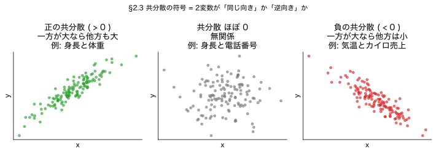
| 観点 | 頻度論 | ベイズ |
|---|---|---|
| パラメータ $\mathbf{w}$ | 固定の真値 | 確率分布（信念） |
| 確率の意味 | 長期試行の頻度 | 信念の度合い |
| 典型的推定 | 最尤推定 (MLE) | 事後分布 → 点推定 (MAP) または積分 |
| 不確実性の扱い | 標準誤差・信頼区間 | 事後分散・予測分布 |
MAP (Maximum A Posteriori) = 事後分布 $p(\mathbf{w}\mid \mathcal{D})$ の最頻値を取る点推定。本プリント §5.2 で詳述。
$$\underbrace{p(\mathbf{w}\mid \mathcal{D})}_{\text{事後}} \;=\; \frac{\overbrace{p(\mathcal{D}\mid \mathbf{w})}^{\text{尤度}} \cdot \overbrace{p(\mathbf{w})}^{\text{事前}}}{\underbrace{p(\mathcal{D})}_{\text{周辺尤度}}}, \qquad p(\mathcal{D}) = \int p(\mathcal{D}\mid \mathbf{w})\,p(\mathbf{w})\,d\mathbf{w}$$
「事後 ∝ 尤度 × 事前」の比例式は $\mathbf{w}$ についての比例（$\mathcal{D}$ は固定）です。
事前と尤度を選ぶと事後も同じ族になる場合、その事前を共役事前と呼びます。計算が閉形式になるのが唯一最大の御利益。例: ガウス尤度 × ガウス事前 = ガウス事後（§3.3）。
「事前分布が恣意的だからベイズは主観」は半分しか正しくない。サンプル数が増えれば事後は尤度に支配され、事前の影響は薄れる（漸近的に頻度論と一致）。
PRML が挙げる有名な例です。 コインを 3回投げて、 たまたま 3回とも表が出たとします。 最尤推定は「データに最もよく当てはまる値」を選ぶので、 「表の確率 = 3/3 = 1」、 つまり「このコインは100%表、 今後 裏は絶対に出ない」と断言してしまいます。 さすがに行きすぎ。 これも一種の過学習（たった3個のデータへの過剰適合）です。
いっぽうベイズは「コインなんてだいたい半々だろう」という ゆるい事前を持っておくので、 3回表を見たあとでも穏当な値に落ち着きます。 たとえば「最初はどの確率も等しくありえる」という一様な事前を使うと、 計算上 表の確率は $(3+1)/(3+2) = 4/5 = 0.8$（ラプラスの継起則）。 「1」と断言せず「0.8 くらいかな」と踏みとどまる。 これが「少ないデータでは事前が効き、 データが増えると事前は薄れて 最尤推定に近づく」という話の 具体的な姿です。
いちばん簡単な見方（疑似カウント）: 一様な事前を入れるのは、 「始める前に すでに 表を1回・裏を1回 見ている」と思うのと 同じことです。 だから 実際の「表3回・裏0回」に、 この"偽の1回ずつ"を 足して 割合を計算します:
$$\frac{\text{表}\ 3 + \overbrace{1}^{\text{偽の表}}}{(\text{表}\ 3 + 1) + (\text{裏}\ 0 + \underbrace{1}_{\text{偽の裏}})} = \frac{4}{5} = 0.8$$
分子の $+1$ が「偽の表」、 分母の $+2$ が「偽の表 ＋ 偽の裏」。 この"水増し"のおかげで、 裏が1回も出ていなくても 裏の確率を 0 にしない（＝表を 1 と断言しない）。 一般化すると、 $N$ 回中 $m$ 回 表なら「次が表」の確率は $\dfrac{m+1}{N+2}$ ＝ラプラスの継起則。
ちゃんと計算すると（任意）: 表の確率を $\mu$ とおくと、 一様な事前は $p(\mu)=1$、 表3回の尤度は $p(\text{データ}\mid\mu)=\mu^3$。 事後は $p(\mu\mid\text{データ})\propto \mu^3$（規格化して $4\mu^3$）。 「次が表」の確率は、 この事後で $\mu$ を平均した値: $\displaystyle\int_0^1 \mu\cdot 4\mu^3\,d\mu = 4\cdot\tfrac{1}{5} = \tfrac{4}{5}$。 ＝事後分布の平均（重心）で、 図5 の赤い分布の重心が ちょうど 0.8 にあたります。
$\propto \mu^3$（比例）は、 「形は $\mu^3$ だけど、 高さ（倍率）は まだ未定」という意味です。 でも 事後 $p(\mu|\text{データ})$ も確率密度なので、 §2.2（と さっきの $p(\mu)=1$）と同じく 全体の面積が 1 でなければいけません。
ところが $\mu^3$ のままだと 面積が 足りない:
$$\int_0^1 \mu^3\, d\mu = \Big[\tfrac{\mu^4}{4}\Big]_0^1 = \tfrac{1}{4}\quad(\text{面積が } \tfrac14 \text{ しかない})$$
そこで 4倍して 面積を ちょうど 1 に合わせます:
$$\int_0^1 4\mu^3\, d\mu = 4\cdot\tfrac{1}{4} = 1\ ✓ \qquad\Rightarrow\qquad p(\mu|\text{データ}) = 4\mu^3$$
これが「規格化（normalization）」＝ 面積を 1 に揃える ための 定数倍。 形（$\mu^3$）は そのまま、 高さだけ 4倍して 密度として 成立させる操作です。
この $4$ の正体: ベイズ則は本当は $p(\mu|\text{データ}) = \dfrac{\text{尤度}\times\text{事前}}{p(\text{データ})}$ で、 分母 $p(\text{データ}) = \int_0^1 \mu^3\cdot 1\, d\mu = \tfrac14$。 だから $p(\mu|\text{データ}) = \dfrac{\mu^3}{1/4} = 4\mu^3$。 つまり $4$ は $1/p(\text{データ})$ で、 $\propto$ が省略していた "割り算" の正体です（$p(\text{データ})$＝周辺尤度・規格化定数）。
「$p(\mu)=1$ なら 絶対 表が出るのでは？」——とても よくある、 そして大事な勘違いです。 2つの違うものを区別してください:
「一様な事前 $p(\mu)=1$」は、 $\mu$ が 0〜1 の どの値も 等しく ありえる（フェアな 0.5 かも、 表寄りの 0.9 かも、 裏寄りの 0.1 かも、 ぜんぶ 同じくらい もっともらしい）という「まだ 何も分からない」状態のこと。 その密度が 高さ 1 で 真っ平らなのは、 面積を 1 にするためです（横幅が $1-0=1$ なので、 高さ 1 で 面積 $=1$）。 §2.2 でやった「密度の高さ自体に 意味はなく、 面積が 1」の話そのもの。
図5 の青い線を見てください: $\mu=0$ から $\mu=1$ まで 高さ 1 の 真っ平らな横線。 これが $p(\mu)=1$。 「$\mu=1$（絶対 表）」は その横線の右端の1点にすぎず、 $\mu=0$（絶対 裏）や $\mu=0.5$（フェア）と まったく同じ高さ＝同じ もっともらしさ。 つまり 一様事前は「表が確実」どころか、 表寄り・裏寄り・フェア を 平等に扱う、 いちばん 中立な事前なのです。
そう、これは まさに ベイズ則です。 ラプラスの継起則は「新しい別の規則」ではなく、 §3.2 のベイズ則 事後 ∝ 尤度 × 事前 を、 一様事前＋コインに当てはめた結果に 名前が付いただけ。 中身は2段階です:
つまり 「ラプラスの継起則」＝「ベイズ則（で事後）＋ 事後平均（で予測）」。 そして 例の「+1 ずつ」の水増しは、 この計算のalgebraショートカット（一様事前 Beta(1,1) ＋ コインの尤度 だと 答えが $\frac{m+1}{N+2}$ になる、という結果）です。 だから あなたの「これってベイズ則じゃないの？」は大正解。
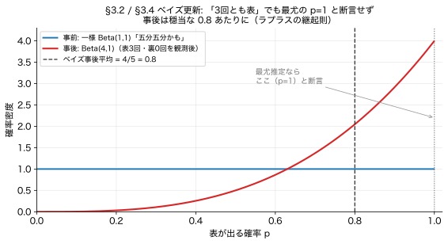
ベイズ確率が単なる「主観の数値化」ではないことを示す結果。 Cox (1946) は信念の度合いを実数で表すときに常識的に満たすべき3つの公理を立てました:
これらの公理から導かれる演算則は確率の和則 (sum rule) ・積則 (product rule) と一意に一致することが証明されました (Cox 1946, Jaynes 2003)。
つまりベイズ確率は古典的論理 (真偽2値) を「真偽の度合い (実数値)」に拡張したものであり、 主観の表現ではなく一貫した推論のための数学的構造です。 PRML §1.2.3 末尾でも E. T. Jaynes の議論として触れられています。
参考: nomulog § 頻度主義とベイズ主義の比較 / Zenn 第1章 §1.2.3 節
1D: $\displaystyle \mathcal{N}(x\mid \mu, \sigma^2) = \frac{1}{\sqrt{2\pi\sigma^2}} \exp\!\left\{ -\frac{(x-\mu)^2}{2\sigma^2} \right\}$
1次元ガウスを決めるパラメータは たった2つ。 $\mu$ が「山のてっぺんの位置（平均）」、 $\sigma$ が「山の横幅（ばらつき）」です。 たとえば成人男性の身長なら $\mu \approx 171$cm、 $\sigma \approx 6$cm くらい。 これは「平均 171cm を中心に、 ±6cm（=$\sigma$）の中に およそ 68%、 ±12cm（=$2\sigma$）の中に およそ 95% の人が収まる」という意味です（ガウスの 68・95・99.7 ルール）。 $\sigma$ が小さいほど 山は細く尖って みんな似た身長、 大きいほど なだらかで バラバラ。 それだけのことです。
D次元: $\displaystyle \mathcal{N}(\mathbf{x}\mid \boldsymbol\mu, \boldsymbol\Sigma) = \frac{1}{(2\pi)^{D/2}}\, \frac{1}{|\boldsymbol\Sigma|^{1/2}} \exp\!\left\{ -\tfrac{1}{2}(\mathbf{x}-\boldsymbol\mu)^\top \boldsymbol\Sigma^{-1} (\mathbf{x}-\boldsymbol\mu) \right\} $
§2.3 冒頭 (多変量ガウスの幾何: 楕円体・マハラノビス距離) と §2.3.1 (条件付きガウス) で詳細展開されますが、 第1章では「ガウスは中心と広がり (共分散行列) で完全に決まる、 等密度面は楕円」とだけ押さえれば十分。
教科書はサラッと書きますが、これはガウス積分から来ます:
$$I = \int_{-\infty}^{\infty} e^{-x^2/2}\, dx = \sqrt{2\pi}$$
2乗→極座標で証明（演習 1.7 と同じ手筋）。 ひと飛ばしせずに4ステップで:
ステップ1: $I^2$ を二重積分にして指数の中身を $x^2 + y^2$ に
$$I^2 = \left(\int e^{-x^2/2}\,dx\right) \left(\int e^{-y^2/2}\,dy\right) = \int\!\!\int e^{-(x^2+y^2)/2}\, dx\, dy$$
ステップ2: 極座標 $(x,y) = (r\cos\theta, r\sin\theta)$ に変換 ([テクニック6] 参照)
ヤコビ行列式 $|\partial(x,y)/\partial(r,\theta)| = r$ なので $dx\,dy = r\,dr\,d\theta$、 $x^2 + y^2 = r^2$:
$$I^2 = \int_0^{2\pi}\!\int_0^{\infty} e^{-r^2/2}\, r\, dr\, d\theta = \int_0^{2\pi}\! d\theta \cdot \int_0^{\infty} e^{-r^2/2}\, r\, dr$$
ステップ3: 内側の $r$ 積分を $u = r^2/2$ で置換
$u = r^2/2 \Rightarrow du = r\, dr$、 範囲は $r: 0 \to \infty$ が $u: 0 \to \infty$:
$$\int_0^{\infty} e^{-r^2/2}\, r\, dr = \int_0^{\infty} e^{-u}\, du = \left[-e^{-u}\right]_0^{\infty} = -0 - (-1) = 1$$
ステップ4: 全部かける
$$I^2 = \underbrace{\int_0^{2\pi} d\theta}_{=2\pi} \cdot \underbrace{\int_0^{\infty} e^{-r^2/2}\, r\, dr}_{=1} = 2\pi \quad \therefore\ I = \sqrt{2\pi}$$
これを $(x-\mu)/\sigma$ で置換すれば、平均 $\mu$ ・分散 $\sigma^2$ ガウスの全積分が $\sqrt{2\pi\sigma^2}$ と分かります。
参考: ガウス積分(Wikipedia) / k-san.link
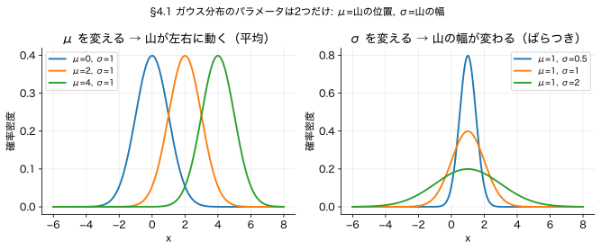
$$E[x] = \int x\,\mathcal{N}(x\mid \mu, \sigma^2)\, dx = \mu, \qquad \mathrm{var}[x] = E[x^2] - \mu^2 = \sigma^2$$
$x_1, \ldots, x_N \overset{\text{i.i.d.}}{\sim} \mathcal{N}(\mu, \sigma^2)$ の対数尤度:
$$\ln p(\mathbf{x}\mid \mu, \sigma^2) = -\frac{N}{2}\ln(2\pi\sigma^2) - \frac{1}{2\sigma^2} \sum_{n=1}^{N} (x_n - \mu)^2$$
$\mu, \sigma^2$ で偏微分してゼロ（$\mu$ の式を先に解いて、その $\mu_{\text{ML}}$ を $\sigma^2$ の式に代入する依存関係に注意）。
$\mu$ の偏微分: 連鎖律で $(x_n - \mu)^2 \to 2(x_n - \mu)\cdot(-1)$:
$$\frac{\partial}{\partial \mu} \ln p = -\frac{1}{2\sigma^2}\sum_n 2(x_n - \mu)(-1) = \frac{1}{\sigma^2}\sum_n (x_n - \mu) = 0$$
$\sigma^2 > 0$ で割れて $\sum_n (x_n - \mu) = 0 \Rightarrow N\mu = \sum_n x_n$、ゆえに $\mu_{\text{ML}} = \tfrac{1}{N}\sum_n x_n$。
$\sigma^2$ の偏微分: $\ln p$ の $\sigma^2$ 依存部分は $-\tfrac{N}{2}\ln \sigma^2 - \tfrac{1}{2\sigma^2}\sum_n (x_n-\mu)^2$。 $\sigma^2$ について微分してゼロ:
$$-\frac{N}{2\sigma^2} + \frac{1}{2(\sigma^2)^2}\sum_n (x_n-\mu)^2 = 0 \;\Rightarrow\; \sigma^2 = \frac{1}{N}\sum_n (x_n - \mu)^2$$
$\mu$ を $\mu_{\text{ML}}$ に置き換えて:
$$\boxed{\mu_{\text{ML}} = \frac{1}{N}\sum_n x_n, \qquad \sigma^2_{\text{ML}} = \frac{1}{N}\sum_n (x_n - \mu_{\text{ML}})^2}$$
身長 168, 170, 175 cm の3人を観測したとします（N=3）。 上の箱の式に 当てはめるだけです:
最尤推定は「平均は ただの平均、 分散は ズレの2乗の平均」という、 拍子抜けするほど素直な式になります。 ただし この分散は ほんの少し小さめに出ます（次の囲み）。 不偏にするには $N$ でなく $N-1 = 2$ で割って $26/2 = 13$ とします。
真の平均 $\mu$ ではなく推定値 $\mu_{\text{ML}}$ を使うと、$(x_n - \mu_{\text{ML}})^2$ は $(x_n - \mu)^2$ より体系的に小さくなります。直感: $\mu_{\text{ML}}$ はサンプル自身から作るので、サンプル達に寄り添う方向に最適化された平均だから。
形式的には演習 1.12 で見るとおり:
$$E[\sigma^2_{\text{ML}}] = \frac{N-1}{N}\, \sigma^2 \quad \text{(過小評価)}$$
不偏推定量にするには $\dfrac{N}{N-1}$ 倍すればよい（これが標本分散で $N-1$ で割る理由）。 明示的には:
$$\widetilde{\sigma}^2 = \frac{N}{N-1}\, \sigma^2_{\text{ML}} = \frac{1}{N-1}\sum_n (x_n - \mu_{\text{ML}})^2 \qquad \text{(式 1.59、 不偏分散)}$$
PRML はここで 10.1.3 への伏線として「ベイズ的に扱えば自動的にこの $N-1$ で割る形が出てくる」と予告しています。
極端例: $N=1$ なら $\mu_{\text{ML}}=x_1$, $\sigma^2_{\text{ML}}=0$ になります。1点では散らばりが定義不能で「ゼロ分散」になる、と思えばバイアスの方向が直感的。
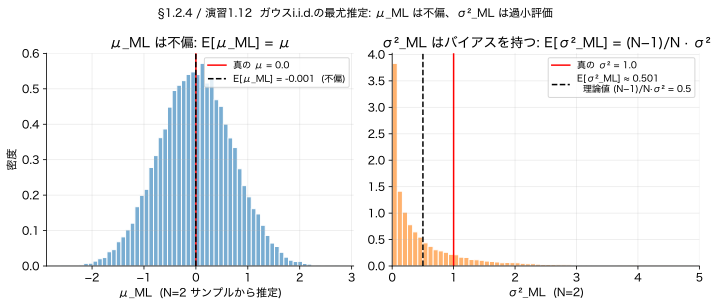
参考: Qiita PRML図1.15 ガウス最尤バイアス / pystyle 正規分布MLEとバイアス
▼ この節の内容を使う章末演習です。 まず自分で手を動かしてから、 解答を開いてください。
方針: (a) まず2次モーメント $E[x_n x_m]$ を $n=m$ と $n \ne m$ で場合分け。 (b) その結果を使って $\mu_{\mathrm{ML}}$ と $\sigma^2_{\mathrm{ML}}$ の期待値を計算する。
Step 1. $E[x_n x_m]$ の場合分け。
両者をクロネッカーデルタ $I_{nm}$ ($n=m$ で 1、 それ以外 0) でまとめると:
$$\boxed{E[x_n x_m] = \mu^2 + I_{nm}\, \sigma^2 \qquad (1.130)\ \checkmark}$$
Step 2. $E[\mu_{\mathrm{ML}}] = \mu$ の導出 (式 1.57)。
$\mu_{\mathrm{ML}} = (1/N)\sum_n x_n$ の期待値は、 期待値の線形性から:
$$E[\mu_{\mathrm{ML}}] = \frac{1}{N}\sum_n E[x_n] = \frac{1}{N} \cdot N \mu = \mu \qquad (1.57)\ \checkmark$$
$\mu_{\mathrm{ML}}$ は不偏推定量（バイアスゼロ）。
Step 3. $E[\sigma^2_{\mathrm{ML}}]$ を構成要素に分解。
$\sigma^2_{\mathrm{ML}} = (1/N)\sum_n (x_n - \mu_{\mathrm{ML}})^2$ の中身を展開:
$$(x_n - \mu_{\mathrm{ML}})^2 = x_n^2 - 2 x_n \mu_{\mathrm{ML}} + \mu_{\mathrm{ML}}^2$$
期待値を取ると3項に分かれる:
$$E[(x_n - \mu_{\mathrm{ML}})^2] = E[x_n^2] - 2\, E[x_n \mu_{\mathrm{ML}}] + E[\mu_{\mathrm{ML}}^2]$$
Step 4. 3項をそれぞれ計算する (ここで Step 1 の結果を活用)。
Step 5. 3項を代入して $\mu^2$ がきれいに消える。
$$E[(x_n - \mu_{\mathrm{ML}})^2] = (\sigma^2 + \mu^2) - 2\!\left(\frac{\sigma^2}{N} + \mu^2\right) + \left(\frac{\sigma^2}{N} + \mu^2\right)$$
$$= \sigma^2 + \mu^2 - \frac{2\sigma^2}{N} - 2\mu^2 + \frac{\sigma^2}{N} + \mu^2 = \sigma^2 - \frac{\sigma^2}{N} = \frac{N-1}{N}\sigma^2$$
結論. $n$ について和を取って $1/N$ 倍しても同じ値:
$$\boxed{E[\sigma^2_{\mathrm{ML}}] = \frac{N-1}{N}\sigma^2 \qquad (1.58)\ \checkmark}$$
つまり $\sigma^2_{\mathrm{ML}}$ は過小評価のバイアスを持つ。 これを $N/(N-1)$ 倍したのが不偏分散 $\tilde\sigma^2 = (1/(N-1))\sum (x_n - \mu_{\mathrm{ML}})^2$ (式 1.59)。
モデル: $t = y(x, \mathbf{w}) + \varepsilon, \quad \varepsilon \sim \mathcal{N}(0, \beta^{-1})$。 $\beta$ は精度パラメータ (precision) = 分散の逆数。PRMLでは分散 $\sigma^2$ より精度 $\beta = 1/\sigma^2$ を主役にします（ベイズ計算で「精度の和」に分解できるため）。以降の章でも一貫してこの記法。
すると条件付き分布は:
$$p(t\mid x, \mathbf{w}, \beta) = \mathcal{N}(t\mid y(x, \mathbf{w}), \beta^{-1})$$
この式の意味を絵にしたのが下の図です。 「各 $x$ で、 出力 $t$ は 曲線 $y(x,\mathbf{w})$ を中心に、 ガウス（正規分布）で散らばる」。 つまり曲線の上に、 各 $x$ ごとに小さなベル（釣鐘）が乗っていて、 データはそのベルから生まれる、 というモデルです。 $\beta^{-1}$ がベルの幅（ノイズの大きさ）。
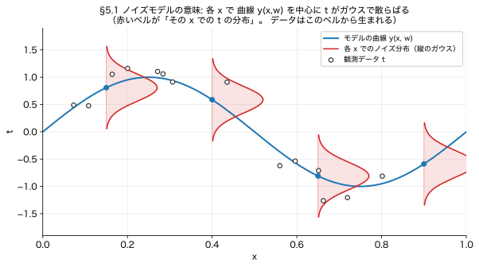
「モデル式から予測分布の形は もう書けるじゃん、 最大化いらなくない？」 — その感覚は正しいです。 ただし大事な区別があります。
上のモデル式は、 パラメータ $\mathbf{w}, \beta$ がまだ"空欄"の「ひな形」です。 $\mathbf{w}, \beta$ に何を入れるかで 無数の違う分布になる。 形は書けても、 どの値を入れればいいかが決まっていないので、 まだ予測できません。
そこで §5.1 がやることは、 ひとつだけ: データを使って空欄を埋める＝いちばんもっともらしい $\mathbf{w}_{\text{ML}}, \beta_{\text{ML}}$ を決める。 それが対数尤度の最大化です。 整理すると:
そして §5.1 のもう一つの収穫が、 この最大化が 実は §1.1 の「二乗和誤差の最小化」と全く同じだと分かること（下の急所）。 これが節タイトル「最小二乗 = ガウス雑音下のMLE」の意味。 つまり §5.1 は「予測分布を作る章」ではなく「空欄の埋め方を決め、 それが最小二乗だと暴く章」。 予測分布は その後 値を入れれば 自動的に出てくる おまけ、 という流れです。
この $p(\mathbf{t} \mid \mathbf{x}, \mathbf{w}, \beta)$ の向きの読み方: 「入力 $\mathbf{x}$ と パラメータ $\mathbf{w}, \beta$ を与えたとき、 手元の出力データ $\mathbf{t}$ が生じる確率」。 これを尤度と呼びます。 一見「逆では？」と感じますが、 狙いは $\mathbf{w}$ をいろいろ動かして「データが一番ありえた $\mathbf{w}$」を選ぶこと。 だから条件（右）に $\mathbf{w}$ を置き、 データ（左）を評価するこの向きが正しいのです（→ §2.1 早見表の「尤度」の行）。
仮定: 各データ点 $n$ のノイズ $\varepsilon_n \overset{\text{i.i.d.}}{\sim} \mathcal{N}(0, \beta^{-1})$ で、 入力 $x_n$ は与えられている。
ステップ1: 独立性から同時確率は積に
$$p(\mathbf{t}\mid \mathbf{x}, \mathbf{w}, \beta) = \prod_{n=1}^{N} \mathcal{N}(t_n \mid y(x_n, \mathbf{w}), \beta^{-1})$$
気づいた人は鋭いです。 1点版の $p(t \mid x, \mathbf{w}, \beta)$ には $x$ があったのに、 ここの全データ版では $x$ が薄く見える。 理由は2つ:
まとめ: $\mathbf{x}$ は"与件"なので棒の右、 $\mathbf{w},\beta$ も"仮置きの条件"なので棒の右、 知りたい・評価したい $\mathbf{t}$ だけが棒の左。 これが尤度の向きです（§2.1「条件付き確率の読み方」）。
ステップ2: 対数を取って積を和に ([テクニック1])
$$\ln p(\mathbf{t}\mid \mathbf{x}, \mathbf{w}, \beta) = \sum_{n=1}^{N} \ln \mathcal{N}(t_n \mid y(x_n, \mathbf{w}), \beta^{-1})$$
ステップ3: ガウスの対数を展開。$\mathcal{N}(t | y, \beta^{-1}) = \sqrt{\beta/(2\pi)}\,\exp\{-\tfrac{\beta}{2}(t-y)^2\}$ より:
$$\ln \mathcal{N}(t_n \mid y(x_n,\mathbf{w}), \beta^{-1}) = \tfrac{1}{2}\ln \beta - \tfrac{1}{2}\ln(2\pi) - \tfrac{\beta}{2}\{t_n - y(x_n,\mathbf{w})\}^2$$
ステップ4: 和を取り、定数項を $E_D(\mathbf{w})$ にまとめる
$$\ln p(\mathbf{t}\mid \mathbf{x}, \mathbf{w}, \beta) = \frac{N}{2}\ln \beta - \frac{N}{2}\ln(2\pi) - \beta \cdot \underbrace{\frac{1}{2}\sum_n \{t_n - y(x_n,\mathbf{w})\}^2}_{= E_D(\mathbf{w})}$$
整理した結果:
$$\ln p(\mathbf{t}\mid \mathbf{x}, \mathbf{w}, \beta) = -\beta\, E_D(\mathbf{w}) + \frac{N}{2}\ln \beta - \frac{N}{2}\ln(2\pi), \qquad E_D(\mathbf{w}) = \frac{1}{2}\sum_n \{t_n - y(x_n, \mathbf{w})\}^2$$
対数尤度を最大化して「ベストな1本の曲線」 $y(x, \mathbf{w}_{\text{ML}})$ が決まると、 新しい入力 $x$ での予測は
$$p(t \mid x, \mathbf{w}_{\text{ML}}, \beta_{\text{ML}}) = \mathcal{N}(t \mid y(x, \mathbf{w}_{\text{ML}}), \beta_{\text{ML}}^{-1}) \qquad \text{(式 1.64)}$$
見ての通り、 形は最初のモデル式 (912行) と同じ。 違いは 添字 $_{\text{ML}}$ がついた点、 つまり 空欄だった $\mathbf{w}, \beta$ に「最大化で決まった具体的な値」が入っていること。 形はタダで書けても、 この $\mathbf{w}_{\text{ML}}, \beta_{\text{ML}}$ は 上の最大化を やって初めて手に入ります。
特に 誤差バーの幅 $\beta_{\text{ML}}^{-1}$ は 最小二乗だけでは出てきません。 尤度を $\beta$ について最大化すると $\beta_{\text{ML}}^{-1} = \tfrac{1}{N}\sum_n \{t_n - y(x_n,\mathbf{w}_{\text{ML}})\}^2$（＝残差の二乗平均、 PRML 式 1.63）。 「データにどれだけフィットし切れなかったか（残差）」から 雑音の大きさを見積もる、 という尤度ならではの量です。 PRML §1.2.5 も「まず $\mathbf{w}_{\text{ML}}$ を決め、 続いて $\beta_{\text{ML}}$ を求める（§1.2.4 の単純ガウスと同じ手順）」と明記しています。
$\mathbf{w}$ がベクトルなのに $\beta$ が1つの数なのは、 2つが表すものが違うからです。
ひとことで: 中心（曲線）は たくさんの数で形を作る → ベクトル $\mathbf{w}$。 散らばり（ベルの幅）は どこでも同じ1つの数で足りる → スカラー $\beta$。 図8 で言えば、 青い曲線をくねらせるのが $\mathbf{w}$、 赤いベルの太さを決めるのが $\beta$ です。
補足: もし「点ごとに ノイズの大きさが違う」設定（heteroscedastic）にすれば $\beta$ も点ごと＝複数になりますが、 第1章は全点 共通ノイズを仮定するので $\beta$ は1個です。 なお $\beta_{\text{ML}}^{-1}$ の式は N 個の残差を1つの数に平均している点からも「全点を代表する1つの雑音レベル」だと読めます。
かみくだくと、「決めた1本の曲線のまわりに、 どこに行っても同じ幅 $\beta_{\text{ML}}^{-1}$ の誤差バーをつけたもの」。 天気予報でいえば「明日も明後日も1年後も、 ずっと同じ『±3℃』で予報します」と言っているような状態。 この『どこでも同じ幅』が後で問題になります（§5.3 でフルベイズと比べます）。
$\mathbf{w}$ を含む項は $-\beta\, E_D(\mathbf{w})$ だけ。よって対数尤度の最大化 $\Longleftrightarrow$ $E_D(\mathbf{w})$ の最小化。これが §1.1 で「とりあえず二乗和を最小化」した深い根拠。
ひとことで言うと、MAP推定 = 最小二乗に「重みを大きくしすぎるな」という罰金を足しただけです。 §1.4 で見た、 M=9 の多項式が グニャグニャに暴れて 係数 $w_9$ が 約 12万 まで膨れ上がった あの現象。 あれを罰金で抑え込む仕組み、 と思ってください。
なぜ罰金が出てくるのか? 確率の言葉で言うとこうです。 「重み $\mathbf{w}$ は たぶん 0 の近くにあるだろう」という事前の思い込み（事前分布）を、 データを見る前に持っておく。 そして データを見た後の確からしさ（事後）を
事後 ∝ （データとの当てはまり） × （事前の思い込み）
と考え、 これが最大になる $\mathbf{w}$ を選ぶ。 これが MAP（事後確率最大）です。 思い込みが「$\mathbf{w}$ は小さいはず」なので、 大きな $\mathbf{w}$ には 自動的に罰金がかかる、 というわけ。
式で確認しましょう。 ここは本（PRML）でも結果がほぼ ポンと出る所なので（PRML は 式 1.65→1.66→1.67 と並べて「負の対数を取って合体」とだけ言う）、 間を 5 ステップに割って埋めます。
ステップA: ベイズ則「事後 ∝ 尤度 × 事前」（§3.2）。 $\mathbf{w}$ の事後分布は
$$p(\mathbf{w}\mid \mathbf{x}, \mathbf{t}, \alpha, \beta) \;\propto\; \underbrace{p(\mathbf{t}\mid \mathbf{x}, \mathbf{w}, \beta)}_{\text{尤度（§5.1）}} \cdot \underbrace{p(\mathbf{w}\mid \alpha)}_{\text{事前（形は次のBで決める）}} \qquad \text{(式 1.66)}$$
ここで 事前 $p(\mathbf{w}\mid\alpha)$ は「$\mathbf{w}$ についての思い込み」を表す分布です。 この段階では まだ形を決めていません（記号だけ）。 形を決めるのが次のステップB。
ステップB: 事前を「ガウス」と決める（式 1.65）。 ここで初めて、 事前分布の具体的な形を選びます。 選ぶのはガウス分布 — この節の冒頭で言った「重み $\mathbf{w}$ は 0 を中心に散らばっているはず」という思い込みを、 そのまま数式にしたものです（平均 0、 ばらつきが $\alpha^{-1}$ のガウス）。 それを指数の形まで開くと、 肩に $-\tfrac{\alpha}{2}\mathbf{w}^\top\mathbf{w}$ が現れます:
$$p(\mathbf{w}\mid \alpha) = \mathcal{N}(\mathbf{w}\mid \mathbf{0}, \alpha^{-1}\mathbf{I}) = \left(\tfrac{\alpha}{2\pi}\right)^{(M+1)/2}\exp\!\left(-\tfrac{\alpha}{2}\mathbf{w}^\top\mathbf{w}\right) \qquad \text{(式 1.65)}$$
ステップC: 負の対数を取る。 $\ln$ は積を和に変える（[テクニック1]）ので、 マイナスを付けて:
$$-\ln(\text{事後}) = \underbrace{-\ln p(\mathbf{t}\mid\mathbf{x},\mathbf{w},\beta)}_{\text{尤度の負対数}} \;\; \underbrace{-\ln p(\mathbf{w}\mid\alpha)}_{\text{事前の負対数}} \;+\; \text{const}$$
（分母 $p(\mathbf{x},\mathbf{t})$ は $\mathbf{w}$ に依らないので const に入る。）
ステップD: 尤度の負対数 は §5.1 で出した結果そのまま:
$$-\ln p(\mathbf{t}\mid\mathbf{x},\mathbf{w},\beta) = \beta\, E_D(\mathbf{w}) + \text{const} = \tfrac{\beta}{2}\sum_n\{y(x_n,\mathbf{w})-t_n\}^2 + \text{const}$$
ステップE: 事前の負対数 は ステップB の指数の肩のマイナスを取るだけ:
$$-\ln p(\mathbf{w}\mid\alpha) = \tfrac{\alpha}{2}\mathbf{w}^\top\mathbf{w} + \text{const}$$
D と E を ステップC に足し合わせれば、 下の結果です。
結果（式 1.67）:
$$-\ln p(\mathbf{w}\mid \cdots) = \underbrace{\frac{\beta}{2} \sum_n \{y(x_n,\mathbf{w}) - t_n\}^2}_{\text{データとのズレ(=罰金なしの最小二乗)}} + \underbrace{\frac{\alpha}{2}\, \mathbf{w}^\top \mathbf{w}}_{\text{重みが大きいことへの罰金}} \;+\; \text{const}$$
ここが混乱しやすい所です。 const は「$\mathbf{w}$ に依存しない項」をまとめたものであって、 β について定数という意味ではありません。
なぜ $\mathbf{w}$ 基準なのか: いま目的は MAP 推定、 つまりこの式を $\mathbf{w}$ について最小化して $\mathbf{w}_{\text{MAP}}$ を求めること。 最小化する変数は $\mathbf{w}$ だけ。 だから「$\mathbf{w}$ を動かしても変わらない項」は、 最小値の場所に影響しないので、 ぜんぶ const に放り込んでよいのです。 const の中身は具体的には:
$$\text{const} = \underbrace{-\tfrac{N}{2}\ln\beta}_{\text{βを含むが w 無し}} + \underbrace{-\tfrac{M+1}{2}\ln\alpha}_{\text{αを含むが w 無し}} + (\text{2πの項}) + \underbrace{\ln p(\mathbf{x},\mathbf{t})}_{\text{周辺尤度}}$$
見ての通り、 const には β や α を含む項が入っています。 だから β を動かせば const は変わります（＝β については定数ではない）。 「$\mathbf{w}$ について定数」というだけ。 いまは β を「固定された既知の値（ハイパーパラメータ）」として扱っているので、 $\mathbf{w}_{\text{MAP}}$ を求める計算では これらを定数扱いできる、 というわけです。
もし β 自体も推定したくなったら: その時は const に隠した $-\tfrac{N}{2}\ln\beta$ を表に出して、 今度は β について微分してゼロと置きます。 それがまさに §5.1 で出した β の最尤推定（式 1.63、 残差の二乗平均）。 「何を変数とみなすか」で const の中身が変わる、 というのが要点です。
右の第2項 $\tfrac{\alpha}{2}\mathbf{w}^\top\mathbf{w}$ が まさに罰金（$\mathbf{w}$ が大きいほど大きくなる）。 これは正則化係数 $\lambda = \alpha/\beta$ の二乗誤差と ぴったり一致します。 つまり正則化項の正体は「事前分布の対数」だったわけです。 $\alpha$ は事前の精度（$\mathbf{w}$ を 0 に押さえる強さ）、$\beta$ は雑音の精度。 比 $\alpha/\beta$ が罰金の強さを決めます。
§1.4 の表で見た通り、 罰金なし（ただの最小二乗）だと M=9 で 係数が $w_9 \approx 125{,}201$ と暴走しました。 ここに「$\mathbf{w}$ は小さいはず」という事前（=罰金）を入れると、 同じ係数が 72.68 程度まで引き戻され、 曲線も なめらかになります。 これが MAP の効き目を 数字で見たもの。 罰金の強さ $\lambda = \alpha/\beta$ を上げるほど、 $\mathbf{w}$ は強く 0 へ引き寄せられます。
この事後を最大にする点 $\mathbf{w}_{\text{MAP}} = \arg\max_{\mathbf{w}} p(\mathbf{w}\mid \mathcal{D})$ をMAP推定（Maximum A Posteriori、 事後確率最大）と呼びます (§3 の表参照)。
α と β はどう決めるか: 比 $\lambda = \alpha/\beta$ で正則化強度が決まりますが、 絶対値の決め方は3通り — (i) クロスバリデーション (§6)、 (ii) 経験ベイズ / エビデンス最大化 (§3.5 で扱う)、 (iii) 領域知識から固定値を与える。 PRML 第1章では「与件」として扱い、 §3.5 で本格的に推定法を導入します。
MLE も MAP も、 最後にベストな曲線を1本選んで「これが答え」とします。 フルベイズは そこが違う。 データと矛盾しない曲線を全部、 もっともらしさで重みづけして残し、 予測のときは全員の意見を平均する。
何が嬉しいのかを具体例で。 データ点が $x$ の 0〜0.5 あたりに固まっているとします。 ここで「データの無い遠く」 $x = 0.9$ を予測させると:
この「データから離れると誤差が広がる」性質こそ、 フルベイズが MLE/MAP に勝る最大のポイントです（この節の最後の図9が、 まさにこの様子を描いています）。
では式で。 ベストな $\mathbf{w}$ を1個選ぶのではなく、 ありうる $\mathbf{w}$ をすべて、 その確からしさ $p(\mathbf{w}\mid \mathbf{x},\mathbf{t})$ で重みづけて 足し合わせ（積分し）ます:
$$p(t\mid x, \mathbf{x}, \mathbf{t}) = \int p(t\mid x, \mathbf{w})\, p(\mathbf{w}\mid \mathbf{x}, \mathbf{t})\, d\mathbf{w} \qquad \text{(式 1.68)}$$
この積分はガウス×ガウスでガウスのまま閉じ、結果は次のガウス (式 1.69):
$$p(t\mid x, \mathbf{x}, \mathbf{t}) = \mathcal{N}\!\left(t \,\middle|\, m(x),\, s^2(x)\right)$$
記号の中身: $\boldsymbol{\phi}(x) = (1, x, x^2, \ldots, x^M)^\top$ は入力 $x$ を基底に通した基底ベクトル（§1 で出た計画行列 $\Phi$ の1行に相当。$\Phi$ は学習データ全点を縦に積んだ行列、$\boldsymbol{\phi}(x)$ は新しい1点 $x$ のベクトル）。 $\mathbf{S}$ は $\mathbf{w}$ の事後共分散行列で、その逆が $\mathbf{S}^{-1} = \alpha \mathbf{I} + \beta \sum_n \boldsymbol{\phi}(x_n)\boldsymbol{\phi}(x_n)^\top$（式 1.72、 導出は §3.3）。 平均 $m(x) = \beta\, \boldsymbol{\phi}(x)^\top \mathbf{S} \sum_n \boldsymbol{\phi}(x_n)\, t_n$（式 1.70）は、 $\mathbf{w}$ の事後平均（ガウス事後なので MAP 点と一致）で評価した予測 $y(x, \mathbf{w})$ に等しい。
$$s^2(x) \;=\; \underbrace{\beta^{-1}}_{\text{ノイズ起源 (irreducible)}} \;+\; \underbrace{\boldsymbol{\phi}(x)^\top \mathbf{S}\, \boldsymbol{\phi}(x)}_{\text{パラメータ不確実性起源 (x 依存!)}} \qquad \text{(式 1.71)}$$
第1項だけ（=MLE/MAP）だと、 誤差バーは どこでも同じ幅 $\beta^{-1}$。 だから「データから離れた領域でも自信満々」という困った振る舞いになる。 第2項が加わって はじめて「知らない場所では誤差が広がる」正直な予測になります（下の図9）。
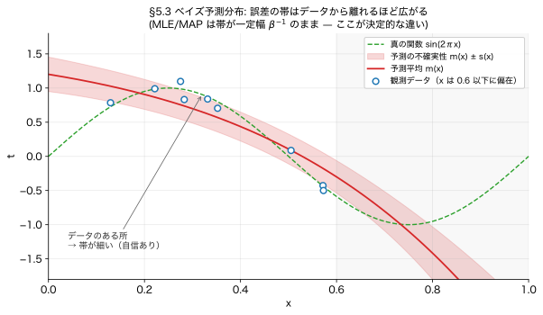
「閉じる」のは、指数の肩がすべて $\mathbf{w}$ の二次形式 → 和も二次形式 → 平方完成でガウスに戻るから（詳しくは §2.3.3 で再訪、式 2.116）。 なお $\alpha, \beta$ のようなモデルパラメータの分布を制御するパラメータをハイパーパラメータと呼びます (§3.5 で経験ベイズ的にデータから推定する手法を扱う)。
「良い $M$ や $\lambda$ をどう選ぶか」を扱います。 訓練誤差は $M$ を上げれば必ず下がる（過学習）ので、 汎化誤差を推定する仕組み が必要。
手元に 100個のデータがあり、 正則化の強さ $\lambda$ を決めたいとします。 5-fold CV では、 データを 20個ずつ 5組に分けて:
5回ぶんの検証誤差を平均したものが、 その $\lambda$ の「成績」。 いくつかの $\lambda$ で これを比べて、 いちばん成績のよい $\lambda$ を選びます。 「全データを 学習にも検証にも 使い回せる」のが利点で、 データが少ないときに効く。 欠点は、 これを $\lambda$ の候補ごとに 5回ずつ やるので 計算が重いこと。
欠点: 学習を $K$ 倍に増やすため計算重い。 さらに複数ハイパラ (例: $\lambda$ と $M$ の両方) を一緒に探索すると組合せ爆発で実用困難（PRML p.33）。
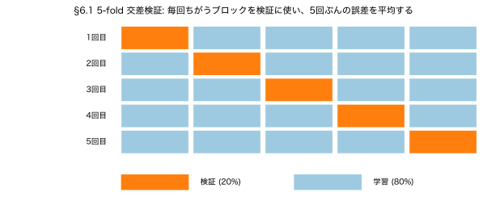
学習を 1 回で済ませる代わりに、 訓練対数尤度に過学習ペナルティを加える:
$$\mathrm{AIC} = \ln p(\mathcal{D} \mid \mathbf{w}_{\text{ML}}) - M \qquad \text{(式 1.73)}$$
$M$ はパラメータ数。 パラメータが多いほど罰金を引くことで過学習を抑える。 BIC (式 4.139) はベイズ的根拠から $M$ ではなく $\tfrac{M}{2}\ln N$ を引く（パラメータ数だけでなくデータ数にも依存）。
具体例: M=3 のモデルと M=9 のモデルが訓練データに 同じくらい当てはまる（訓練尤度が同じ）なら、 AIC は M=9 から 9点、 M=3 から 3点 の罰金を引きます。 だから 同点なら シンプルな M=3 が勝つ。 「迷ったら単純なモデル」を 数式で表したもの、 と思えばよい。
欠点: 「実効的なパラメータ数」を反映しないので、 正則化された複雑モデル (実効的にはパラメータが少ない) で過小評価される傾向。
モデル比較を確率の言葉で。 各モデル $\mathcal{M}_i$ に対し周辺尤度 (marginal likelihood / evidence) $p(\mathcal{D} \mid \mathcal{M}_i)$ を計算し、それで比較。 自動的に「複雑すぎる」モデルにペナルティが入る (Occam's razor が自然に発動)。
第1章では実用上は CV で十分、と Bishop は書いています。 ベイズエビデンスは §3.4, §4.4 で本格的に扱う。
「次元の呪い」とは、 次元（=変数の数）が増えると、 私たちの 3次元的な直感が ことごとく裏切られる現象のこと。 まず イメージを掴みましょう。
オレンジを思い浮かべてください。 ふつうの3次元のオレンジなら、 皮（外側の薄い層）が占める体積は ごくわずかで、 中身（果肉）が大部分ですよね。 ところが 高次元のオレンジでは、 体積の ほぼ全部が「皮」に集まり、 中身はスカスカになります。 「データ点も ほとんどが 端っこに 散らばってしまい、 中心付近は からっぽ」。 下に挙げる3つの現象は、 どれも この「直感が効かなくなる」話の 別々の顔です。
D次元立方体 $[-1, 1]^D$ の内側 $[-r, r]^D$ が占める体積比は $r^D$。 $r = 0.9$ で固定して D だけ変えると:
| $D$ | 2 | 10 | 100 | 500 |
|---|---|---|---|---|
| 内側 $r^D$ の比率 | 0.81 | 0.35 | $2.7\times 10^{-5}$ | $1.3\times 10^{-23}$ |
| シェル $1-r^D$ の比率 | 0.19 | 0.65 | $\approx 1$ | $\approx 1$ |
「シェル」と「皮」は同じものを指します（厚さ $1-r$ の外側帯）。
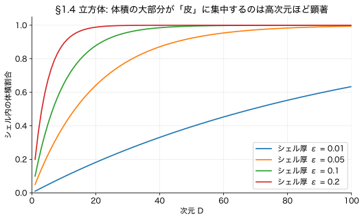
D次元球の半径 $[0, r]$ の体積比 $= r^D$ → 同じく外側の薄い殻に集中。 半径 $r=1$ の球と $r=1-\varepsilon$ の球を考えると、 厚さ $\varepsilon$ のシェル内の体積比は
$$1 - (1-\varepsilon)^D \qquad \text{(式 1.76)}$$
立方体の (a) と同じ形。 $D$ 大で急速に 1 に近づきます。
$D$ 次元入力 $\mathbf{x} = (x_1, \ldots, x_D)$ に対し $M$ 次までの多項式を作ると、 独立な係数の数は $D^M$ オーダー (式 1.74、 演習 1.16 で証明)。 具体的に:
| $D$ | $M=2$ | $M=3$ | $M=4$ |
|---|---|---|---|
| パラメータ数 $\sim$ | $D^2$ | $D^3$ | $D^4$ |
| $D=10$ | $\approx 100$ | $\approx 1{,}000$ | $\approx 10{,}000$ |
| $D=100$ | $\approx 10^4$ | $\approx 10^6$ | $\approx 10^8$ |
これだけパラメータがあれば訓練データに完全フィットできるが、 「データから推定する」段階で必要なサンプル数も指数爆発。 ⇒ 素朴な多項式モデルは高次元で詰む。 §3 以降の基底関数モデル、 §6 のカーネル法、 §7 のスパース手法など、 すべてこの呪いを別の形で回避するための工夫です。
「中心がピーク」のはずのガウスなのに、半径方向の密度 $p(r)$ の最大値は $\hat{r} \approx \sigma\sqrt{D}$。中心 $r = 0$ ではありません。
準備: $D$次元単位球の表面積は $S_D = 2\pi^{D/2} / \Gamma(D/2)$（式 1.142）。ここで $\Gamma(z) = \int_0^{\infty} t^{z-1} e^{-t}\, dt$ はガンマ関数で、$\Gamma(n) = (n-1)!$ の連続版です。具体的に $D=2$ で $S_2 = 2\pi$ (円周)、$D=3$ で $S_3 = 4\pi$ (球の表面積) になります。
ガウス密度 $\exp(-r^2/(2\sigma^2))$ は $r=0$ で最大。だが「半径 $r$ の球殻」の体積は $r^{D-1}$ で増えます ($D=2$ なら円周 $2\pi r$, $D=3$ なら表面積 $4\pi r^2$, 一般に $S_D\, r^{D-1}$)。
$$p(r) \;\propto\; \underbrace{r^{D-1}}_{\text{体積 (増加)}} \cdot \underbrace{\exp\!\left(-\frac{r^2}{2\sigma^2}\right)}_{\text{密度 (減少)}}$$
増える項と減る項の積なので、どこかにピークができる。微分してゼロにする計算を、積の微分公式 $(uv)' = u'v + uv'$ で展開します:
$u = r^{D-1}, \; v = e^{-r^2/(2\sigma^2)}$ とおくと:
$$u' = (D-1)\, r^{D-2}, \qquad v' = -\frac{r}{\sigma^2}\, e^{-r^2/(2\sigma^2)} \quad \text{(連鎖律)}$$
$$\frac{d}{dr}\!\left[r^{D-1} e^{-r^2/(2\sigma^2)}\right] = (D-1)\, r^{D-2} e^{-r^2/(2\sigma^2)} - r^{D-1} \cdot \frac{r}{\sigma^2}\, e^{-r^2/(2\sigma^2)}$$
共通因子 $r^{D-2} e^{-r^2/(2\sigma^2)}$ を括り出して（$r>0$ ではこれは正なので不等号も変わらない）:
$$r^{D-2} e^{-r^2/(2\sigma^2)} \cdot \left[(D-1) - \frac{r^2}{\sigma^2}\right] = 0$$
$r>0$ ではカッコ内がゼロ ⇒
$$\frac{r^2}{\sigma^2} = D - 1 \;\Longleftrightarrow\; \hat{r} = \sigma\sqrt{D-1} \approx \sigma\sqrt{D} \quad (D \text{ 大})$$
つまり高次元ガウスは $\sigma\sqrt{D}$ 付近の薄い球殻に集中 しています (中心ではない)。これがガウスにすら効く「次元の呪い」。
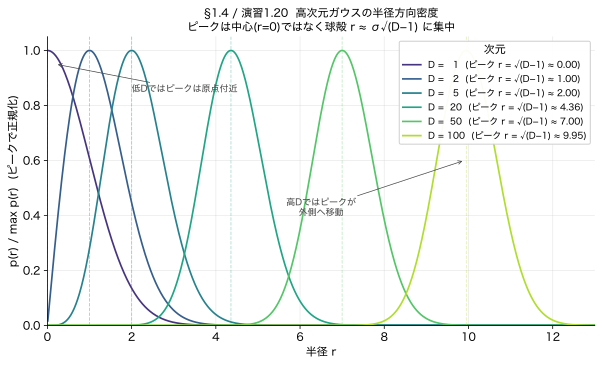
「次元の呪い」が ML に与える影響は、大きく 距離の均質化、 サンプルの希薄化、そして密度推定の困難化 の3点。これらを ML はどう切り抜けるかまで含めて整理します。
$D$ 次元一様分布から多数の点を抽出すると、任意の参照点に対する「最近傍までの距離 $d_{\min}$」と「最遠傍までの距離 $d_{\max}$」の比が 1 に近づきます:
$$\frac{d_{\max} - d_{\min}}{d_{\min}} \xrightarrow{D \to \infty} 0$$
これは $k$-NN、放射基底関数 (RBF) ネットワーク、ガウシアン・カーネル SVM など 距離ベース手法の根幹 を崩します。「近い」という概念が消えれば「近傍を見て答える」戦略が無意味になる。
単位立方体 $[0,1]^D$ を一辺 $\ell$ のグリッドで分割すると $\ell^{-D}$ 個のセルができます。各セルに 1 点欲しいだけで指数的に多くのサンプルが必要 (1次元なら 10 点で十分でも、10次元では $10^{10}$ 点)。 ⇒ 「データから密度を推定する」型の手法は指数的にコストが膨らむ。これがヒストグラム法やナイーブな KDE が高次元で機能しない理由。
(b) の帰結ですが、高次元ガウスが球殻に集中するように、典型的な点 (typical set) はモード周辺にいない。最尤点推定が「代表値」を返してくれない場合があり、サンプリングや積分でも有限サンプルでは球殻ばかり当たって中心は永遠に当たらない (これは MCMC の混合困難にも繋がる)。
MAP 推定・勾配法への影響: 最尤/MAP の値そのものは数値最適化で得られるが、 そこから「モード近傍からのサンプルで期待値を計算」する素朴な戦略は破綻する (球殻に質量があるので有限サンプル平均がモードの値で代表されない)。 これが MCMC の Hamiltonian Monte Carlo のような「球殻を効率的に動く」サンプラーが PRML 第11章で必要になる動機。
実世界の高次元データ (画像、音声、テキスト) は実は低次元の多様体に集中している、という経験則:
本書全体を通じて繰り返し登場する次元の呪いへの対処を、第1章末で予告 (§1.4 末尾) しています:
| 戦略 | 仕組み | 該当章 |
|---|---|---|
| 滑らかさ仮定 | $\mathbf{x}$ がわずかに動けば出力もわずかに動く ⇒ 局所線形近似で間引き | §6 カーネル法 / §6.4 ガウス過程 |
| 次元削減 | 低次元表現に射影してから学習 | §12 PCA / オートエンコーダ |
| 疎な特徴選択 | 関係する説明変数だけ残す ($L_1$ 正則化) | §3.1.4 lasso 系 |
| モデルの構造化 | 変数間の依存関係をグラフで明示し有効パラメータ数を抑える | §8 グラフィカルモデル |
| 正則化 / 事前分布 | 滑らかな関数だけを許す事前を入れる ⇒ 事実上の自由度を絞る | §1.3, §3 |
「高次元は厄介だが、実データは多様体に住む」「ML は多様体構造を仮定／学習することで次元の呪いから逃げる」が PRML 全体の通奏低音。これ以降の章で「なぜカーネルか」「なぜ次元削減か」「なぜグラフィカルモデルか」を問うとき、答えはすべてここから来ます。
参考: Qiita 次元の呪い / 蛍光ペンの交差点 サクサクメロンパン問題 / Qiita 高次元正規分布は超球面状
▼ この節の内容を使う章末演習です。 まず自分で手を動かしてから、 解答を開いてください。
⚠️ PRML印刷版エラッタ: PRML 本文の (1.149) は $p(\hat r + \varepsilon) = p(\hat r)\exp(-3\varepsilon^2/(2\sigma^2))$ と印刷されていますが、係数 $3/(2\sigma^2)$ は誤りで、正しくは $\exp(-\varepsilon^2/\sigma^2)$（つまり係数は $1/\sigma^2$）。本演習の正解は後者で、Taylor 2次展開を $\hat r^2 = (D-1)\sigma^2$ で計算すれば確認できます（下の解法スケッチ参照）。
方針: (a) 球殻の体積 × 密度で $p(r)$ を導出。 (b) $\ln p(r)$ を $r$ で微分し停留点 $\hat r$ を求める。 (c) $\hat r$ 周りで Taylor 2次展開して鋭いピークを示す。
Step 1. 半径方向密度 $p(r)$ の導出 (式 1.148)。
$p(\mathbf{x})$ は $\|\mathbf{x}\|$ にしか依存しない球対称分布。 半径 $r$、 厚さ $\varepsilon$ ($\varepsilon \ll 1$) の薄い球殻の体積は
$$V_{\text{shell}} = S_D\, r^{D-1}\, \varepsilon \qquad (S_D = 2\pi^{D/2}/\Gamma(D/2)\ \text{は単位球の表面積})$$
$\varepsilon$ が小さければ殻内で密度はほぼ一定 $= p(\|\mathbf{x}\| = r) = (2\pi\sigma^2)^{-D/2}\exp(-r^2/(2\sigma^2))$。 よって殻内の確率質量は:
$$\int_{\text{shell}} p(\mathbf{x})\, d\mathbf{x} \;\approx\; V_{\text{shell}} \cdot p(\|\mathbf{x}\| = r) = \underbrace{\frac{S_D\, r^{D-1}}{(2\pi\sigma^2)^{D/2}} \exp\!\left(-\frac{r^2}{2\sigma^2}\right)}_{= p(r),\ \text{式 1.148}} \cdot \varepsilon \quad \checkmark$$
Step 2. 停留点 $\hat r$ を求める。
対数を取って微分するのが楽: $f(r) := \ln p(r) = (D-1)\ln r - r^2/(2\sigma^2) + C$。 $r$ で微分:
$$f'(r) = \frac{D-1}{r} - \frac{r}{\sigma^2}$$
$f'(r) = 0$ を解く:
$$\frac{D-1}{r} = \frac{r}{\sigma^2} \;\Longrightarrow\; r^2 = (D-1)\sigma^2 \;\Longrightarrow\; \boxed{\hat r = \sigma\sqrt{D-1} \approx \sigma\sqrt{D}\ \ (D\ \text{大})}$$
Step 3. $\hat r$ が極大であることを2階微分で確認。
$$f''(r) = -\frac{D-1}{r^2} - \frac{1}{\sigma^2}$$
$\hat r$ で評価。 ここでは Step 2 で得た厳密値 $\hat r^2 = (D-1)\sigma^2$ をそのまま代入するのがコツ:
$$f''(\hat r) = -\frac{D-1}{(D-1)\sigma^2} - \frac{1}{\sigma^2} = -\frac{1}{\sigma^2} - \frac{1}{\sigma^2} = -\frac{2}{\sigma^2}\ (<0)$$
負なので $\hat r$ は局所最大。 ($\hat r \approx \sigma\sqrt{D}$ の近似値を代入すると $-(D-1)/(D\sigma^2) - 1/\sigma^2$ となり、 $D$ 大の極限で同じ $-2/\sigma^2$ に収束。 厳密値の方が代数が綺麗)。
Step 4. $\hat r$ 周りで Taylor 2次展開。
ピーク幅は次に示すように $\sigma$ オーダー（$D$ に依らない）なので、 $\varepsilon \ll \sigma$ の領域で考えれば 3次以上の項 $O(\varepsilon^3/\sigma^3)$ は無視できる。 $f'(\hat r) = 0$ より線形項なし、 2次まで:
$$f(\hat r + \varepsilon) \approx f(\hat r) + \tfrac{1}{2} f''(\hat r)\varepsilon^2 = f(\hat r) - \frac{\varepsilon^2}{\sigma^2}$$
$f = \ln p$ なので両辺を指数化:
$$\boxed{p(\hat r + \varepsilon) \approx p(\hat r)\exp\!\left(-\frac{\varepsilon^2}{\sigma^2}\right)}$$
結論と解釈. 高次元では確率質量が $\hat r \approx \sigma\sqrt{D}$ の薄い球殻に集中。 ピーク幅は $\sigma$ オーダーで $D$ によらず一定なので、 半径方向の相対幅 (= 幅/中心) は $1/\sqrt{D}$ で消えていく ⇒ 高次元では「中心」も「球殻外」も実質確率ゼロ。 これがガウスに効く次元の呪い。
⚠️ PRML 印刷版 (1.149) は $\exp(-3\varepsilon^2/(2\sigma^2))$ と書かれていますが、 これは公式エラッタで、 正しい係数は $-1/\sigma^2$ です (上記 Step 3 の $f''$ 計算が根拠)。
推論 (inference) = データから $p(\mathcal{C}_k|x)$（や $p(t|x)$）を推定する段階。 決定 (decision) = その確率を踏まえて実際に何を出す／どう行動するかを選ぶ段階。 PRML はこの2つを分けて考えるべきと強調します。
検査画像 $x$ から「ガンである確率」を推定したら $p(\text{ガン}|x) = 0.3$ だったとします。 これが推論。 では「ガンと診断する／しない」をどう決めるか？ それが決定で、 確率だけでは決まりません。 「ガンを見逃す損失」と「健康な人を誤って疑う損失」の大小（コスト）しだいです。
カギは: 同じ確率 0.3 でも、 状況によって最適な決定が変わる。 見逃しが命に関わるなら 0.3 でも「ガン」と判断するし、 過剰治療の害が大きいなら「経過観察」にする。 確率（推論）はデータから決まる客観的な量、 決定は「損失」という別の入力を加えて初めて決まる。 だから2段階に分けるのが自然で、 しかも推論を先に済ませておけば、 損失が変わっても 決定だけ やり直せる（再学習不要）。 この利点は §8.3 の「事後確率を持つ4つの理由」に直結します。
記号はいかついですが、 言っていることは単純です。 まず登場人物:
間違い (mistake) が起きるのは 2パターンだけ:
この2つを足したのが式 1.78。 つまり 「判定した先」と「本当のクラス」が食い違う確率の合計です。 記号 $\int_{\mathcal{R}_1}$ は「領域 $\mathcal{R}_1$ に入る $x$ を ぜんぶ足し上げる（積分する）」という意味。
図13（下）で見ると一目瞭然: 横軸 $x$ に 青 $p(x,\mathcal{C}_1)$ と 赤 $p(x,\mathcal{C}_2)$ の2曲線。 境界 $x_0$ の左（$\mathcal{R}_1$）にある赤の裾（本当はC2なのにC1判定）と、 右（$\mathcal{R}_2$）にある青の裾（本当はC1なのにC2判定）の合計面積（灰色）が p(mistake)。 境界を2曲線の交点に置くと、 各 $x$ で「背の高いほうのクラス」を選ぶことになり、 はみ出す面積（＝間違い）が最小になります。
補足: $p(x,\mathcal{C}_k)$ は §2.1 の同時確率で、 $p(\mathcal{C}_k|x)\,p(x)$ とも書けます。 だから「同時確率が大きいほう」を選ぶのは「事後確率 $p(\mathcal{C}_k|x)$ が大きいほう」を選ぶのと同じ（$p(x)$ は両クラス共通なので）。 これが §1.5.1「最大事後確率を選べば誤分類最小」の中身です。
2クラス（ガン / 健康）で、 ある患者の検査結果が $p(\text{ガン}|x) = 0.3$、 $p(\text{健康}|x) = 0.7$ だったとします。
素朴に最大事後確率だけで決めると、 $0.7 > 0.3$ なので「健康」と判定。 …でも それでいい？ ガンの見逃しは 命に関わります。 そこで損失行列 $L_{kj}$（真のクラス $k$ → 判定 $j$ にしたときの損失）を入れます:
| 真↓ \ 判定→ | ガンと判定 | 健康と判定 |
|---|---|---|
| 本当はガン | 0（正解） | 100（見逃し=大損失） |
| 本当は健康 | 1（誤陽性=小損失） | 0（正解） |
各判定の期待損失 $\sum_k L_{kj}\,p(\mathcal{C}_k|x)$ を計算します（その判定をしたとき、 真のクラスがどっちかで損失を平均）:
期待損失が小さいのは「ガンと判定」（$0.7 < 30$）。 確率は 0.3 しかないのに、 見逃しの損失が大きいので「ガン」と判断するのが正解になりました。 「最大事後確率なら健康、 期待損失最小ならガン」と、 同じ確率でも 損失行列しだいで判定が逆転する。 これが §1.5.1（最小誤分類）と §1.5.2（最小期待損失）の違いであり、 §8.1 で「推論と決定は別」と言った理由です。
上の $p(\text{ガン}|x) = 0.3$ は事後確率（posterior）そのものです。 決定理論は「事後確率」を入力として受け取って、 損失と組み合わせて決定します。 では事前・尤度・事後は それぞれ何に当たるか:
つまり全体は2段構えです:
① 事前 × 尤度 →(ベイズ)→ 事後 $p(\text{ガン}\mid x)$ 〔これが推論〕
② 事後 × 損失行列 →(期待損失 最小化)→ 判定 〔これが決定〕
§8.2 は ① の結果（0.3）から始めて ② をやっています。 ①（事前×尤度→事後）の数値例そのものは §2.1 の検査の例にあります（あちらは 事前 1%・感度 95% → 事後 約9% という別の数値設定）。 損失行列は 事前・尤度・事後 とは別物で、 ②（決定）の段階で初めて入る「コストの表」だ、 という点に注意。
棄却オプションの具体例: 「$\max_k p(\mathcal{C}_k|x) < 0.9$ なら 自動判定せず 医師に回す」。 自信のある（事後確率が高い）ケースだけ機械が判定し、 際どいケースは人間に委ねる仕組み。 閾値 $\theta$ を上げるほど 棄却（保留）は増えますが、 自動判定した分の精度は上がります。
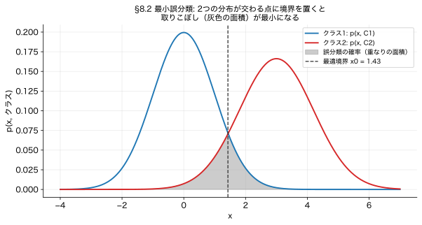
PRML は決定（分類）の3アプローチを示します。 ここが分かりにくいので、 まず直感から。
写真を見て「猫か犬か」を当てる問題で考えます。 3つは 「どこまで本気でモデルを作るか」の度合いが違うだけ。 作り込みが多い順に:
カギは 「(a) → (b) → (c) で 作り込みが だんだん減る」こと。 (a) は多くを得られる（$p(x)$＝データ全体の分布まで手に入り、 データ生成も外れ値検出もできる）が、 そのぶん大変（x の分布を丸ごと学ぶ＝高次元だとほぼ無理、 データも大量に要る）。 (c) は楽だが、 確率が無いので後で何もできない。 (b) は「判定に必要な事後確率だけを 過不足なく学ぶ」中庸で、 純粋な分類では実用上いちばん強いことが多い。
代表例: (a) 素朴ベイズ・混合ガウス・隠れマルコフ／ (b) ロジスティック回帰・ニューラルネット（softmax）／ (c) サポートベクターマシン（素）・パーセプトロン。
生成モデル (a) が手元に用意するのは 2つ: 尤度 $p(x|\mathcal{C}_k)$（「もしクラス $k$ なら、 この写真 $x$ はどれくらい出やすいか」）と 事前 $p(\mathcal{C}_k)$（「そもそもクラス $k$ はどれくらい多いか」）。 でも本当に欲しいのは 事後 $p(\mathcal{C}_k|x)$（「この写真を見て、 猫である確率」）。 この向きの変換に使うのがベイズ則（§2.1）です:
$$p(\text{猫}|x) = \frac{\overbrace{p(x|\text{猫})}^{\text{尤度}}\;\overbrace{p(\text{猫})}^{\text{事前}}}{p(x)}, \qquad p(x) = p(x|\text{猫})\,p(\text{猫}) + p(x|\text{犬})\,p(\text{犬})$$
「ベイズで比べる」とは、 各クラスについて 尤度 × 事前（＝「猫らしさ」「犬らしさ」）を計算して、 大きいほうを選ぶこと。 分母 $p(x)$ は両クラスで共通なので、 勝ち負けを決めるだけなら無視してOK（分子 ＝ 尤度×事前 だけ比べればよい）。
数字で: ある写真について、 生成モデルが $p(x|\text{猫})=0.6$（けっこう猫っぽい）、 $p(x|\text{犬})=0.2$ と言ったとします。 事前が五分五分 $p(\text{猫})=p(\text{犬})=0.5$ なら:
事前が効く例: もし犬のほうが ずっと多い地域で $p(\text{猫})=0.1$、 $p(\text{犬})=0.9$ だったら、 猫らしさ $=0.6\times0.1=0.06$、 犬らしさ $=0.2\times0.9=0.18$ → $p(\text{猫}|x)=0.06/0.24=\mathbf{0.25}$ で 今度は犬。 同じ写真でも 事前（クラスの多さ）しだいで判定が変わる。 これが「尤度 × 事前」というベイズの効き目で、 §2.1 の検査の例（事前1%が効いて事後9%になった話）と まったく同じ構造です。
向きの読み方: 最後に欲しいのは「この入力 $x$ はどのクラス？」 $= p(\mathcal{C}_k \mid x)$（左がクラス＝知りたいこと）。 (b) はそれを直接狙う向き。 (a) はあえて逆向きの $p(x \mid \mathcal{C}_k)$（「クラス $k$ のデータはどんな見た目か」）をモデル化し、 Bayes 則で $p(\mathcal{C}_k \mid x)$ に反転させます（→ §2.1 早見表）。 なぜ遠回りするのか＝逆向きの方がモデル化しやすい場合や、 副産物の $p(x)$（データ全体の分布）が外れ値検出に使えるから。
| アプローチ | 何をモデル化 | 長短 |
|---|---|---|
| (a) 生成モデル | $p(x \mid \mathcal{C}_k)$ と $p(\mathcal{C}_k)$ → ベイズで $p(\mathcal{C}_k|x)$ | 柔軟・$p(x)$ も手に入る（外れ値検出に使える）・データ多く要 |
| (b) 識別モデル | $p(\mathcal{C}_k \mid x)$ を直接 | 中庸、 logistic 回帰など |
| (c) 判別関数 | $x$ → クラス番号への決定的写像 | 軽いが確率出ない、後処理が効かない |
では「(a)(b) のように事後確率 $p(\mathcal{C}_k|x)$ を持っておくと、(c) と比べて 何が嬉しいのか？」 — これが §1.5.4 の核心で、 輪読で必ず問われます。 答えが次の4つ。 逆に言えば、 (c) 判別関数は確率を出さないので、 この4つが どれもできないのが弱点です。
$$E[L_q] = \int\!\!\int |y(x) - t|^q\, p(x, t)\, dx\, dt$$
普通の微分は変数 $w$ に関して。汎関数微分は関数 $y(\cdot)$ そのものに関して微分する操作。直感的には「$y$ を $y(x_0)$ だけ動かしたときの $E[L_q]$ の変化率」。$E[L_q] = \int F[y(x)]\, dx$ の形なら結果は
$$\frac{\delta E[L_q]}{\delta y(x_0)} = \left. \frac{\partial F}{\partial y} \right|_{x=x_0}$$
つまり各 $x$ ごとに普通の微分をすればよい (詳細は付録 D)。
$y(x)$ を汎関数微分してゼロ。 厳密には $\delta E[L_q]/\delta y(x_0) = p(x_0) \cdot \int q|y(x_0)-t|^{q-1}\mathrm{sign}(y(x_0)-t)\, p(t|x_0)\, dt$ となるが、 $p(x_0) > 0$ の領域では両辺を $p(x_0)$ で割れて各 $x$ ごとに独立に最適化できる:
$$\int q\, |y(x) - t|^{q-1}\, \mathrm{sign}(y(x) - t)\, p(t\mid x)\, dt = 0$$
| $q$ | 最適 $y(x)$ | 性質 |
|---|---|---|
| 2 | 条件付き平均 $E[t\mid x]$ | $\int (y-t)\,p(t|x)\,dt=0 \Rightarrow y = E[t|x]$。滑らか、外れ値に弱い |
| 1 | 条件付き中央値 (median) | $\int \mathrm{sign}(y-t)\,p(t|x)\,dt = 0$ より $y$ の左右で確率質量が等しい |
| $\to 0$ | 条件付き最頻値 (mode) | $|y-t|^q$ は $t=y$ 近傍以外でほぼ 1、$t=y$ で 0 → 「ノッチ」を $p(t|x)$ が最大のところに置くと損失積分が最小化される |
ある会社の社員5人の年収が 400, 420, 450, 480, 500（万円）。 「代表値」を1つ出すと:
ほぼ同じですね。 ところが ここに 年収 1億円（=10000万円）の社長が1人 加わると:
これが「二乗損失($q=2$)は外れ値に弱く、 絶対損失($q=1$)は頑健」の正体です。 二乗は ズレを 2乗するので、 遠い1点が 効きすぎる。 最適な $y(x)$ が「平均か、 中央値か、 最頻値か」は 損失の形 $q$ しだいで変わる、 というのが 演習1.27 のメッセージです。
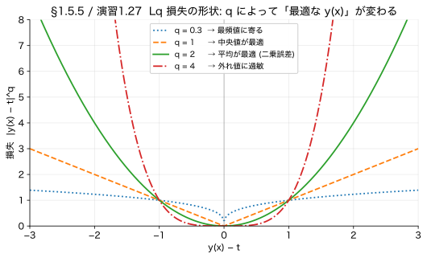
期待二乗損失 $E[L] = \iint \{y(x)-t\}^2 p(x,t)\,dx\,dt$ は次の2項に分かれます。 「途中（交差項が消える所）」を飛ばさず埋めます:
ステップ1: $E[t|x]$ を 足して引く（add-and-subtract、 値は変えない）:
$$y(x)-t = \{y(x)-E[t|x]\} + \{E[t|x]-t\}$$
ステップ2: 2乗して展開（$(a+b)^2 = a^2 + 2ab + b^2$）:
$$\{y(x)-t\}^2 = \{y(x)-E[t|x]\}^2 + 2\{y(x)-E[t|x]\}\{E[t|x]-t\} + \{E[t|x]-t\}^2$$
ステップ3: $t$ について（$x$ を固定して）期待値を取ると 交差項が消える。 $\{y(x)-E[t|x]\}$ は $t$ に依らないので外へ出せて:
$$\int 2\{y(x)-E[t|x]\}\{E[t|x]-t\}\,p(t|x)\,dt = 2\{y(x)-E[t|x]\}\underbrace{\int \{E[t|x]-t\}\,p(t|x)\,dt}_{=\;E[t|x]-E[t|x]\;=\;0} = 0$$
（中の積分は「平均 $E[t|x]$ からのズレの平均」なので ちょうど 0。） 残った第1項・第3項を $x$ でも平均すると、 第3項は $\int\{E[t|x]-t\}^2 p(t|x)dt = \mathrm{var}[t|x]$ なので:
$$E[L] = \underbrace{\int \{y(x) - E[t|x]\}^2\, p(x)\, dx}_{\text{第1項}} \;+\; \underbrace{\int \mathrm{var}[t|x]\, p(x)\, dx}_{\text{第3項}} \qquad \text{(式 1.90)}$$
これは §3.2 のバイアス・バリアンス分解 (式 3.41) の伏線。 第1項をさらに「(バイアス)² + バリアンス」に分解できる、というのが第3章の議論です。
回帰でも分類と並列で3アプローチ (PRML §1.5.5 周辺):
参考: 大阪PRML読書会 第1章 1.21-1.30 演習
▼ この節の内容を使う章末演習です。 まず自分で手を動かしてから、 解答を開いてください。
方針: 汎関数微分で「各 $x$ ごとに独立に最適化」できることを示し、 $q=2, 1, \to 0$ の各場合に最適 $y(x)$ を求める。
Step 1. $E[L_q]$ を $y$ で汎関数微分。
$$E[L_q] = \int\!\!\int |y(x) - t|^q\, p(t|x)\, p(x)\, dt\, dx$$
$y(x)$ を関数として動かしたときの $E[L_q]$ の変化率 ($y(x_0)$ を $\delta y(x_0)$ だけ動かす):
$$\frac{\delta E[L_q]}{\delta y(x_0)} = p(x_0) \cdot \int q\, |y(x_0) - t|^{q-1}\, \mathrm{sign}(y(x_0) - t)\, p(t|x_0)\, dt$$
$p(x_0) > 0$ の領域では割って消せる ⇒ 各 $x$ ごとに独立に次の停留条件を解けばよい:
$$\int q\, |y(x) - t|^{q-1}\, \mathrm{sign}(y(x) - t)\, p(t|x)\, dt = 0$$
注: この停留条件には PRML 本文中で式番号は振られていない (問題文 "Write down the condition" の答えそのもの)。
Step 2. ケース $q=2$ (検算: 条件付き平均)
$|y-t|^{2-1} \mathrm{sign}(y-t) = (y-t)$ なので積分は分解:
$$\int (y - t)\, p(t|x)\, dt = y \cdot \underbrace{\int p(t|x)\, dt}_{=1} - \underbrace{\int t\, p(t|x)\, dt}_{= E[t|x]} = y - E[t|x] = 0$$
$\therefore y(x) = E[t|x]$。 これは回帰関数 (式 1.89) であり、二乗誤差最小化の標準的解。
Step 3. ケース $q=1$ (条件付き中央値)
$|y-t|^0 \cdot \mathrm{sign}(y-t) = \mathrm{sign}(y-t)$ なので:
$$\int \mathrm{sign}(y-t)\, p(t|x)\, dt = \int_{-\infty}^{y} (+1)\, p(t|x)\, dt + \int_{y}^{\infty} (-1)\, p(t|x)\, dt$$
$$= P(t < y \mid x) - P(t \ge y \mid x) = 0$$
つまり $P(t < y|x) = P(t \ge y|x) = 1/2$。 これは条件付き中央値 (conditional median) の定義。 外れ値に強い損失関数。
Step 4. ケース $q \to 0$ (条件付き最頻値)
関数 $g(t) = |y - t|^q$ の $q \to 0^+$ での挙動:
よって $g(t)$ は $t = y$ 近傍にだけ「下向きのノッチ (穴)」を持つ階段関数に近づく。 損失積分:
$$E[L_q \mid x] = \int |y-t|^q p(t|x)\, dt \;\to\; \int_{t\ne y} 1 \cdot p(t|x)\, dt - (\text{ノッチで削れる量})$$
全体の積分値は「1 から〈ノッチで削れる分〉を引いた値」。 削れる分はノッチを置いた位置 $y$ における密度 $p(t|x)$ に比例します（密度が高い場所ほど、そこを 0 に削れば積分が大きく減るから）。 したがって損失を最小化するには、 ノッチを密度 $p(t|x)$ が最大の場所に置けばよい:
$$\therefore y(x) = \arg\max_t p(t|x) = \text{条件付き最頻値 (mode)}\ \checkmark$$
まとめ
| $q$ | 最適 $y(x)$ | 用途・性質 |
|---|---|---|
| 2 | 条件付き平均 $E[t|x]$ | 標準的、滑らかだが外れ値に弱い |
| 1 | 条件付き中央値 | 外れ値に頑健 |
| $\to 0$ | 条件付き最頻値 | 多峰分布でモードを返す |
イベント $x$ の「驚き」を $h(x) = -\log p(x)$ で定義 (確率小ほど驚き大、$p=1$ なら驚き 0、$p \to 0$ なら無限大)。 分布 $p$ の平均的驚きが エントロピー:
$$H[x] = -\sum_x p(x) \log p(x) \quad \text{(離散)}, \qquad H[x] = -\int p(x) \ln p(x)\, dx \quad \text{(連続, 式 1.103)}$$
底を 2 にすればビット (情報理論で標準)、 $e$ にすればナット。本書は ln (ナット)。
エントロピー $H[x]$ は単なる「驚き」の平均ではなく、 確率変数 $x$ の値を伝送するのに必要な平均符号長の理論的下限 でもあります (Shannon, 1948)。 つまり「$N$ 回独立に $x$ を観測した結果をどんなに賢く圧縮しても、 平均で $N \cdot H[x]$ ナット (or ビット) より短くはできない」。 §9.3 の KL の符号化解釈も、 この定理から自然に出てきます。
「驚き $h(p)$ は次を満たすべき」と公理化します:
第1条件を $h$ の関数形に翻訳: $h(p_x \cdot p_y) = h(p_x) + h(p_y)$。 これは関数方程式 $h(ab) = h(a) + h(b)$ で、解は $h(p) \propto \log p$ に限られます（演習 1.28 が誘導付きで導く）。 第2条件から係数は負、 ⇒ $h(p) = -\log p$ が必然的に出る。
歴史的には Boltzmann のエントロピー $S = k \ln W$（$W$ は微視状態数）から、 スターリングの近似 $\ln N! \approx N\ln N - N$ を経て $H = -\sum p_i \ln p_i$ が現れます（PRML §1.6 冒頭）。
離散から連続への移行 (式 1.101-1.103) では、 ビン幅 $\Delta$ を 0 にする極限で $-\ln \Delta$ が発散します。 これを切り捨てたのが連続版エントロピーで、 微分エントロピー (differential entropy) と呼ばれます。 離散と連続では「単位」が違うので、 連続版は負になり得ます。 例: ガウス (1.110) は $\sigma^2 < 1/(2\pi e)$ で $H < 0$。 これは「鋭く尖った分布は驚きが小さい」ことの帰結。
公平なコイン ($p=1/2$):
$$H = -\tfrac{1}{2} \ln \tfrac{1}{2} - \tfrac{1}{2} \ln \tfrac{1}{2} = \ln 2 \approx 0.693 \text{ ナット}$$
偏ったコイン ($p=0.9$):
$$H = -0.9 \ln 0.9 - 0.1 \ln 0.1 \approx 0.095 + 0.230 = 0.325 \text{ ナット}$$
偏ったコインの方は「ほぼ表」と予測できるので驚きの期待値が小さい。公平なコインは予測しづらいのでエントロピー最大。 図15 のグラフがこの関係をなめらかに描いています。
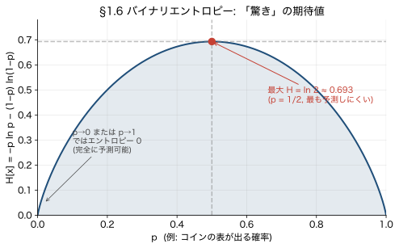
1次元ガウス $\mathcal{N}(\mu, \sigma^2)$ では $\ln p(x) = -\tfrac{1}{2}\ln(2\pi\sigma^2) - (x-\mu)^2/(2\sigma^2)$、よって:
$$H[x] = -E[\ln p(x)] = \tfrac{1}{2}\ln(2\pi\sigma^2) + \frac{1}{2\sigma^2}\, E[(x-\mu)^2] = \tfrac{1}{2}\ln(2\pi\sigma^2) + \tfrac{1}{2} = \tfrac{1}{2}\{1 + \ln(2\pi\sigma^2)\}$$
補足: ガウスは「平均と分散を固定した中でエントロピー最大化問題の解」（§1.6 内, 演習 1.34）。 ラグランジュ未定乗数法で「正規化」「平均」「分散」の3制約を入れて $\delta H/\delta p = 0$ を解くとガウスの形 (式 1.108-1.109) が出ます。 だからガウス＝平均・分散を与えたときの最も無情報な分布と言えます。
▼ この節の内容を使う章末演習です。 まず自分で手を動かしてから、 解答を開いてください。
注: 暗黙に正規化条件 (1.105) $\int p(x)\,dx = 1$ も使います。 PRML が「(1.106) と (1.107) を用いて」と書くのは (x-μ)² を展開して E[x²], E[x], E[1] に分けるルートを想定したものですが、 (1.105) と (1.107) を使う方が短く、 下の解答もそちらのルートで進めます。
方針: エントロピーの定義 $H[x] = -\int p(x)\ln p(x)\, dx$ に1変数ガウスの密度を代入し、 (1.105) と (1.107) を使って積分を実行する。
Step 1. ガウス密度の対数を計算。
$$p(x) = \frac{1}{\sqrt{2\pi\sigma^2}}\exp\!\left(-\frac{(x-\mu)^2}{2\sigma^2}\right)$$
両辺の対数を取り、 $\exp$ の中身が引っ張り出される:
$$\ln p(x) = -\frac{1}{2}\ln(2\pi\sigma^2) - \frac{(x-\mu)^2}{2\sigma^2}$$
Step 2. エントロピーの定義に代入。
$$H[x] = -\int p(x)\ln p(x)\, dx = -\int p(x)\left[-\frac{1}{2}\ln(2\pi\sigma^2) - \frac{(x-\mu)^2}{2\sigma^2}\right] dx$$
マイナスを分配し、 2つの積分に分解:
$$H[x] = \frac{1}{2}\ln(2\pi\sigma^2) \underbrace{\int p(x)\, dx}_{(\text{第1項})} + \frac{1}{2\sigma^2} \underbrace{\int (x-\mu)^2\, p(x)\, dx}_{(\text{第2項})}$$
Step 3. 与えられた結果を代入。
代入すると:
$$H[x] = \frac{1}{2}\ln(2\pi\sigma^2) \cdot 1 + \frac{1}{2\sigma^2} \cdot \sigma^2 = \frac{1}{2}\ln(2\pi\sigma^2) + \frac{1}{2}$$
結論.
$$\boxed{H[x] = \frac{1}{2}\!\left\{1 + \ln(2\pi\sigma^2)\right\} \qquad (1.110)\ \checkmark}$$
解釈:
PRML はこの後 (演習 1.34) で「平均と分散を固定した条件下で $H$ を最大化する分布はガウス」を示します（Lagrange 未定乗数法）。 つまり ガウス = 平均と分散だけが既知のときの最も無情報な分布。
2つの分布 $p, q$ の「隔たり」:
$$\mathrm{KL}(p\,\|\,q) = \int p(x) \ln\frac{p(x)}{q(x)}\, dx = -\int p(x) \ln\frac{q(x)}{p(x)}\, dx$$
非対称（$p$ と $q$ を入れ替えると値が変わる）。距離ではない。
符号化的解釈: $\mathrm{KL}(p\|q)$ は「真の分布が $p$ なのに $q$ で符号化したときに余分に必要な平均符号長 (ナット数)」。 $p$ で最適符号化すれば平均長 $H[p]$ ナットで済むところ、 $q$ で符号化すると $H[p] + \mathrm{KL}(p\|q)$ ナット必要。 ⇒ KL は「分布間の隔たり = 余分な符号長」。
真の分布が 公平なコイン $p = (\text{表}\,0.5,\ \text{裏}\,0.5)$ なのに、 あなたが「このコインは9割 表だ」と誤解して $q = (0.9,\ 0.1)$ を使ったとします。 KL は その「思い込みのズレ」を 数値で測ります:
$$\mathrm{KL}(p\,\|\,q) = 0.5\ln\frac{0.5}{0.9} + 0.5\ln\frac{0.5}{0.1} \approx 0.51 \text{ ナット}$$
0 より大きい（＝ズレている証拠）。 もし $q$ も公平 $(0.5, 0.5)$ なら ぴったり 0（ズレなし）。 符号化で言えば「本当は半々なのに 9割表用の符号を使ったせいで、 1回あたり 平均 0.51 ナット ぶん 損する」。
非対称の確認: 逆向きは $\mathrm{KL}(q\,\|\,p) = 0.9\ln\frac{0.9}{0.5} + 0.1\ln\frac{0.1}{0.5} \approx 0.37$ ナット。 $0.51 \ne 0.37$ で、 $p$ と $q$ を入れ替えると値が変わります。 だから KL は「距離」ではない（距離なら 行きと帰りは同じはず）。
$\mathrm{KL}(p\|q)$ と $\mathrm{KL}(q\|p)$ は値が異なるだけでなく、 近似の性質も異なります:
同じ真の分布 $p$ でも、 forward / reverse のどちらを使うかで得られる近似が大きく違うのが KL の非対称性の本質的なご利益。
準備: 関数 $f$ が凸とは、任意の2点を結ぶ弦が関数のグラフより上にある状態 ($-\ln$ や $x^2$)。凹はその逆 ($\ln$ や $\sqrt{x}$)。Jensen の不等式: 凸関数 $f$ に対し $E[f(X)] \ge f(E[X])$（凹ならば不等号反転）。
2点で数値確認: $X$ が 1/2 の確率で 1、1/2 の確率で 3 を取るとする。$E[X] = 2$。 $f(x) = x^2$ (凸) なら $f(E[X]) = 4$、 $E[f(X)] = (1+9)/2 = 5$。確かに $5 \ge 4$、等号でない。等号は $X$ が一点に集中するときだけ。
本題に戻って $f = -\ln, X = q(x)/p(x)$、 期待値は $p$ のもとで:
$$E_p[-\ln(q/p)] \ge -\ln E_p[q/p] = -\ln \int p \cdot \frac{q}{p}\, dx = -\ln \int q\, dx = -\ln 1 = 0$$
左辺がまさに $\mathrm{KL}(p\|q)$。 ∴ $\mathrm{KL}(p\|q) \ge 0$。
等号条件（KL が ちょうど 0 になるのは いつか）: 「距離が 0 以上」だけでなく、 0 になるのは ぴったり $p=q$ のときだけ、 を示します（これが言えて はじめて KL が"違いの尺度"として機能する。 違うのに距離0、 では困る）。 3ステップ:
例: $x \in \{1,2,3\}$ で、 比 $q/p$ の値が $(0.8,\ 1.3,\ 1.0)$ のように $x$ ごとに バラバラなら $X$ は定数でない（→ ギャップが出て KL$>0$）。 逆に $(1,\ 1,\ 1)$ のように 全部 そろっていれば $X$ は定数（→ 等号で KL$=0$）。 後者は まさに $q$ が $p$ と同じ（比が どこでも1）という状況です。
まとめ: $\mathrm{KL}(p\|q) = 0 \iff q/p$ が定数 $\iff$ （その定数は 1 なので）$p = q$。 「2つの分布が ぴったり同じときだけ 距離ゼロ」。 これで KL が"違いの大きさ"として 安心して使えます。
注: 「$p$-a.s.（$p$-almost surely、 ほとんど至るところ）」は「確率ゼロの例外を除いて」という測度論の用語。 初学者は「実質 すべての $x$ で」と読んで差し支えありません。
別物だと思っていた 2つが、 じつは同じ操作だった、 という話です:
この2つが ぴったり一致します。 だから MLE は「なんとなくデータに合わせている」のではなく、 裏でこっそり『真実への近さ（KL）』を最小化している。 これが「情報理論（KL）と 推定論（MLE）の橋渡し」と呼ばれる理由です。
なぜそうなるか、 3ステップで。
ステップ1: 「近さ」を KL で測る。 真の分布 $p(x)$（データを生む"神様の分布"、 中身は不明）に、 自分のモデル $q(x|\theta)$ を近づけたい。 近さは KL で測ります（§9.3）:
$$\mathrm{KL}(p\,\|\,q) = \int p(x)\,\ln\frac{p(x)}{q(x|\theta)}\,dx = \underbrace{E_p\!\left[\ln p(x) - \ln q(x|\theta)\right]}_{p\ \text{のもとでの平均（期待値）}}$$
ステップ2: でも $p$ は知らない → サンプル平均で近似する（これが「経験分布で近似」の意味）。 KL は「$p$ のもとでの期待値」ですが、 真の分布 $p$ の中身は分かりません。 分かっているのは $p$ から実際に取れたデータ $\{x_1,\ldots,x_N\}$ だけ。 ここで期待値は サンプルの ただの平均で近似できる（式 1.35。 データ自体が $p$ に従って出ているので、 「$p$ で重みづけた平均」≒「サンプルの平均」）:
$$\mathrm{KL}(p\,\|\,q) \;\simeq\; \frac{1}{N}\sum_{n=1}^{N}\Big[\,\underbrace{\ln p(x_n)}_{\theta\,\text{に無関係}} \;-\; \underbrace{\ln q(x_n|\theta)}_{\theta\,\text{を含む}}\,\Big] \qquad \text{(式 1.119)}$$
ステップ3: θ で最小化 → 第1項が消えて、 残るのは「対数尤度」。 上を θ について最小化します。 第1項 $\ln p(x_n)$ は真の分布の値で、 θ を動かしても変わらない定数（最小値の"場所"に効かないので無視できる）。 残った第2項だけ見ると:
$$\arg\min_\theta \mathrm{KL}(p\,\|\,q) \;=\; \arg\min_\theta\!\left[-\frac{1}{N}\sum_n \ln q(x_n|\theta)\right] \;=\; \arg\max_\theta \sum_n \ln q(x_n|\theta) \;=\; \theta_{\mathrm{ML}}$$
最後の $\sum_n \ln q(x_n|\theta)$ を最大化する θ こそ最尤推定 $\theta_{\mathrm{ML}}$（＝対数尤度の最大化、 §4.3/§5.1）。 マイナスが付いているので「最小化」がそのまま「最大化」に化けただけです。
「KL を最小化（モデルを真実に近づける）」＝「対数尤度を最大化（データに合わせる）」。 途中の $\ln p(x_n)$ が θ に無関係で消えてくれるおかげで、 知らないはずの真の分布 $p$ を使わずに、 手元のデータだけで KL 最小化が実行できる ——それが最尤推定の正体だった、 というわけです。 だから MLE は「forward KL の最小化」とも呼ばれます（上の forward/reverse の話で、 経験分布が $p$、 自分のモデルが $q$）。
注: PRML 印刷版 (1.119) は $\tfrac{1}{N}$ なしで $\sum_n\{-\ln q + \ln p\}$ と書かれていますが、 これは「期待値をサンプル平均で近似する」(式 1.35) の規約をそのまま使っているため。 $1/N$ を付けても 最大化する θ は同じ。 後の章では 変分推論や GAN などで この等価性が くり返し使われます。
§9.1 で エントロピー $H[y]$ ＝「$y$ についての不確実性（どれだけ予測しにくいか）」を学びました。 ここで自然に湧く疑問:
「もし $x$ を先に知っていたら、 $y$ の不確実性は どれだけ"残る"？」
これに答えるのが条件付きエントロピー $H[y|x]$＝「$x$ を知ったあとに残る $y$ の不確実性」です。 突然 降ってくる概念ではなく、 「不確実性は、 関係する情報を知れば減るはず」という素朴な発想の続きにすぎません。
たとえば $y$＝「明日 傘が要るか」。 何も知らなければ 不確実で $H[y]$。 でも $x$＝「天気予報」を知れば、 $y$ の予測が ぐっと楽になる → 残る不確実性 $H[y|x]$ は小さい。 逆に $x$ が $y$ と無関係（例: $x$＝今日のサイコロの目）なら、 知っても 何も減らない → $H[y|x] = H[y]$。 そして この「知って どれだけ減ったか」 $= H[y] - H[y|x]$ こそが、 後で出る 相互情報量です。 ——だから 条件付きエントロピーは 相互情報量への前振りなのです。
条件付きエントロピー (式 1.111):
$$H[y|x] = -\iint p(y, x)\ln p(y|x)\, dy\, dx$$
中身を読むと: 各 $x$ について「その $x$ のもとでの $y$ のエントロピー」を計算し、 それを $x$ の分布で平均したもの。 つまり「$x$ を知ったあとに残る $y$ の散らばり」の平均です。
知っている普通のエントロピー（§9.1: $H[y] = -\int p(y)\ln p(y)\,dy$＝「驚き $-\ln p(y)$ を $p(y)$ で平均」）から、 順番に作ってみます。
ステップ1: まず $x$ を 1つの値に固定する。 $x$ が ある特定の値だと分かっているなら、 そのとき $y$ が従う分布は 条件付き $p(y|x)$。 だから その不確実性は、 ただの「$p(y|x)$ のエントロピー」:
$$H\big[y \mid x{=}\text{その値}\big] = -\int p(y|x)\,\ln p(y|x)\, dy$$
普通のエントロピーの $p(y)$ を $p(y|x)$ に差し替えただけです（$x$ を知った後 $y$ は $p(y|x)$ に従うので、 驚きも $\ln p(y|x)$ で測る）。 これは $x$ ごとに値が変わる（$x$ の関数）。
ステップ2: $x$ 自身も ばらつくので、 $x$ で平均する。 $x$ は $p(x)$ に従って ふらつくので、 「$x$ を知ったときの $y$ の不確実性」は、 ステップ1を $x$ の分布で重みづけ平均したもの:
$$H[y|x] = \int p(x)\,\Big[\underbrace{-\int p(y|x)\ln p(y|x)\,dy}_{\text{その }x\text{ での }y\text{ のエントロピー}}\Big]dx = -\iint \underbrace{p(x)\,p(y|x)}_{=\,p(y,x)}\,\ln p(y|x)\, dy\, dx$$
最後に product rule $p(x)p(y|x) = p(y,x)$ でまとめれば、 式 1.111 の完成です。 「$\ln$ の中が条件付き $p(y|x)$、 重みが同時 $p(y,x)$」という一見ヘンな組み合わせは、 「①各 $x$ で 条件付きの驚き → ②同時分布で平均」という作り方のそのままの結果。 ここが腑に落ちると 式が自然に見えます。
$x$＝天気（晴 / 雨 が 各 50%）、 $y$＝傘を持つか。 晴なら 傘 10%、 雨なら 傘 90% とします。
いっぽう 天気を知らなければ、 傘を持つ確率は 晴・雨で場合分けして足す（＝ sum rule・周辺化、 §2.1）:
$$p(\text{傘}) = \underbrace{p(\text{傘}|\text{晴})\,p(\text{晴})}_{0.1\times0.5} + \underbrace{p(\text{傘}|\text{雨})\,p(\text{雨})}_{0.9\times0.5} = 0.05 + 0.45 = 0.5$$
なぜ足すのか（直感）: 100日のうち 晴が50日・雨が50日。 晴の日は 10% が傘 → 5人分、 雨の日は 90% が傘 → 45人分。 合計 50人/100日 ＝ 全体では半々（0.5）。 「各天気での傘率を、 その天気の起こりやすさ $p(\text{天気})$ で重みづけて 足し合わせた」だけ。 天気という条件を消して（平均して）、 傘だけの確率にする操作です。
このとき エントロピーは $H(0.5) = \ln 2 \approx \mathbf{0.693}$。 天気を知ると 不確実性が 0.693 → 0.325 に減った。 この減り分 $0.693 - 0.325 = 0.368$ が、 次に出る相互情報量 $I[x,y]$ です。
「$H[y|x]$ は条件付きだから、 $x$ は与えられて確定してるのでは？ なのに なぜ $x$ で平均（積分）するの？」 — これは 核心を突いた疑問で、 ここに 落とし穴があります。 2つの別物を区別してください:
つまり $H[y|x]$ の「$|x$」は「$x$ を これから知る。 でも どの値かは まだ決めず、 起こりうる $x$ 全部にわたって平均する」という意味。 式の $\displaystyle\int \cdots dx$（$x$ での積分）が、 まさにこの「$x$ で平均する」操作です。 だから $x$ を1つに固定していないからこそ、 $x$ の積分が出てくる。 むしろ 固定していたら 積分は不要なんです。
キレイに書くと: $$H[y|x] = E_x\big[\,H[y\mid x{=}\text{その値}]\,\big] = \sum_x p(x)\,H[y\mid x{=}\text{その値}]$$ ＝「$x$ を知った後に残る $y$ の不確実性の、 平均的な見込み」。 「$x$ を知る前に『知ったら どれくらい不確実さが残るかな』を 期待値で見積もった量」と読めます。
傘の例で言うと: 「雨と分かれば 0.325、 晴と分かれば 0.325」が 値ごとの話（$x$ 確定）。 それを 天気 50:50 で平均した 0.325 が $H[y|x]$（$x$ で平均）。 もし 晴で 0.1、 雨で 0.6 のように違えば、 $H[y|x] = 0.5\times0.1 + 0.5\times0.6 = 0.35$ と、 どちらの値とも違う"平均値"になります。 これが「$x$ で平均」の意味です。
連鎖律 (式 1.112): product rule $p(y,x) = p(y|x)p(x)$ を $\ln$ に入れて整理すると、 エントロピーにも 同じ形の連鎖律が出ます:
$$H[x, y] = H[x] + H[y|x] \qquad \text{(式 1.112、 演習 1.37)}$$
意味: 「$x$ と $y$ を両方 言い当てる手間（全不確実性 $H[x,y]$）」 ＝ 「まず $x$ を言い当てる手間 $H[x]$」 ＋ 「$x$ を知った上で、 残りの $y$ を言い当てる手間 $H[y|x]$」。 2人を順番に当てるときの自然な足し算です。
さて本命の相互情報量 $I[x,y]$ (式 1.120)。 定義はこう書きます:
$$I[x, y] = \mathrm{KL}(p(x,y)\,\|\,p(x)p(y))$$
読み方: $p(x)p(y)$ は「$x$ と $y$ が無関係（独立）だと思って 別々に掛けた分布」、 $p(x,y)$ は「本当の同時分布」。 その2つの隔たりを KL で測ったものが $I$。 本当に独立なら 両者は一致して $I=0$、 関係が強いほど 離れて $I$ が大きい。 「2変数が どれだけ"つながっているか"の量」です。
この KL を 条件付きエントロピーで書き直すと（演習1.31／PRMLの計算）、 ぐっと直感的な形になります (式 1.121):
$$I[x,y] = H[y] - H[y|x] = H[x] - H[x|y]$$
右の $H[y] - H[y|x]$ こそ、 さっき前振りした 「$y$ の不確実性が、 $x$ を知って どれだけ減ったか」。 つまり 相互情報量 ＝ $x$ を知ることで得られる $y$ についての情報量（逆も同じで対称）。 さらに 連鎖律 (1.112) を使えば 3番目の表式:
$$I[x,y] = H[x] + H[y] - H[x, y]$$
（「別々の不確実性の和」から「まとめた不確実性」を引いた"重なり"。 下のベン図がこれ。） そして $x$ と $y$ が独立 $\Longleftrightarrow$ $p(x,y) = p(x)p(y)$ $\Longleftrightarrow$ $I[x,y] = 0$。
独立の定義は たった1本の式:
$$\boxed{\,p(x, y) = p(x)\,p(y)\,}\quad（\text{すべての } x, y \text{ で}）$$
「同時分布が、 それぞれの分布の 単純な掛け算に分かれる」こと。 これと まったく同値な、 もっと直感的な言い換えが:
$$p(y|x) = p(y) \qquad\big(\text{および}\ p(x|y) = p(x)\big)$$
意味は 「$x$ を知っても $y$ の分布が 変わらない」＝「片方を知っても もう片方について 何も分からない」。 これが独立のキモです。
2式が同値な理由: product rule $p(x,y) = p(y|x)\,p(x)$ に $p(x,y)=p(x)p(y)$ を入れると $p(y|x)p(x) = p(x)p(y)$、 両辺を $p(x)$ で割って $p(y|x) = p(y)$。
例で: $x$＝天気、 $y$＝サイコロの目 なら、 天気を知っても 目の確率は変わらない（$p(\text{目}|\text{天気}) = p(\text{目})$）→ 独立、 $I=0$。 いっぽう $x$＝天気、 $y$＝傘 なら、 雨と知れば 傘の確率が ガラッと変わる（$p(\text{傘}|\text{雨}) \ne p(\text{傘})$）→ 独立でない、 $I>0$。 だから「独立 ⟺ $I=0$」が しっくりきます。
$I[x,y] = H[y] - H[y|x]$ という形が いちばん直感的です。 「$y$ の不確実性 $H[y]$ が、 $x$ を知ったあとに $H[y|x]$ まで どれだけ減るか」、 その減少分が相互情報量。
たとえば $x$＝「今日は雨か」、 $y$＝「道行く人が 傘を持っているか」。 雨の日は ほぼ全員 傘を持ち、 晴れの日は ほぼ持たない、 という強い関係があるなら、 天気 $x$ を知るだけで 傘 $y$ が ほぼ読める → $H[y|x]$ がぐっと小さくなり → $I$ は大きい。 逆に $x$＝「サイコロの目」と $y$＝「傘」のように 無関係なら、 $x$ を知っても $y$ の予想は 1ミリも 良くならない → $H[y|x] = H[y]$ → $I = 0$。 つまり $I = 0$ は「独立（知っても無意味）」と完全に同じ意味です。
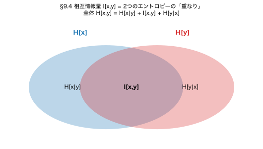
$$I[x,y] = H[x] + H[y] - H[x,y] \ge 0 \quad \Longleftrightarrow \quad H[x,y] \le H[x] + H[y] \quad \text{(式 1.152)}$$
等号は独立のとき。「不確実性は連結すると減るか同じ」と読める。
参考: Liberal Art's diary Jensen不等式とKL非負性 / マサムネの部屋 エントロピーからKL
▼ この節の内容を使う章末演習です。 まず自分で手を動かしてから、 解答を開いてください。
方針: 相互情報量 $I[x,y]$ がエントロピーの差で書けることを示し、 KL非負性から不等式を導く。 等号条件は「KL=0 ⇔ $p(x,y) = p(x)p(y)$ ⇔ 独立」で両方向。
Step 1. 相互情報量の3表現を導出する。
定義 (式 1.120):
$$I[x,y] = \mathrm{KL}(p(x,y)\,\|\,p(x)p(y)) = \iint p(x,y) \ln\frac{p(x,y)}{p(x)p(y)}\, dx\, dy$$
分子分母の対数を分けて:
$$I[x,y] = \iint p(x,y) \big[\ln p(x,y) - \ln p(x) - \ln p(y)\big]\, dx\, dy$$
3項に分け、 周辺化 ($\int p(x,y) dy = p(x)$ など) を使って整理:
$$\therefore\ I[x,y] = -H[x,y] + H[x] + H[y] = H[x] + H[y] - H[x,y]$$
Step 2. KL 非負性から不等式を出す。
§9.3 で示した通り (Jensen 不等式から):
$$I[x,y] = \mathrm{KL}(p(x,y)\,\|\,p(x)p(y)) \ge 0$$
Step 1 の表式を代入:
$$H[x] + H[y] - H[x,y] \ge 0 \;\Longleftrightarrow\; \boxed{H[x,y] \le H[x] + H[y] \qquad (1.152)\ \checkmark}$$
Step 3. 等号条件 (両方向を示す)。
「等号 $\Leftrightarrow$ 独立」を両方向で:
なぜ両方向が要るのか: 問題が「等号が成り立つのは独立なとき、 かつ そのときに限る」（＝ iff・必要十分）を要求しているからです。 iff は「等号⇒独立」と「独立⇒等号」の2つの別々の主張で、 片方を示しても もう片方は自動では言えません（「雨が降る⇒地面が濡れる」は真でも、 逆の「地面が濡れる⇒雨」は偽＝水撒きかも、 のように 逆は別物）。 だから両方 示す必要があります。 ただし難易度は段違い: ($\Leftarrow$) は代入するだけの一瞬、 ($\Rightarrow$) が本番で、 ここで §9.3 の KL 等号条件（$-\ln$ が狭義凸 → KL$=0\iff$分布が一致）が効きます。
結論: $H[x,y] \le H[x] + H[y]$、 等号成立 $\Leftrightarrow$ $x$ と $y$ は統計的独立。
解釈: 2変数を組み合わせると不確実性は減るか同じ（増えはしない）。 「$x$ を知れば $y$ の不確実性は減る (またはそのまま)」が情報理論的に表現された式。 減り分が相互情報量 $I[x,y] = H[y] - H[y|x]$。
注: PRML (1.152) は微分エントロピー (連続版) で書かれていますが、 上の証明は離散・連続いずれでも成立します。